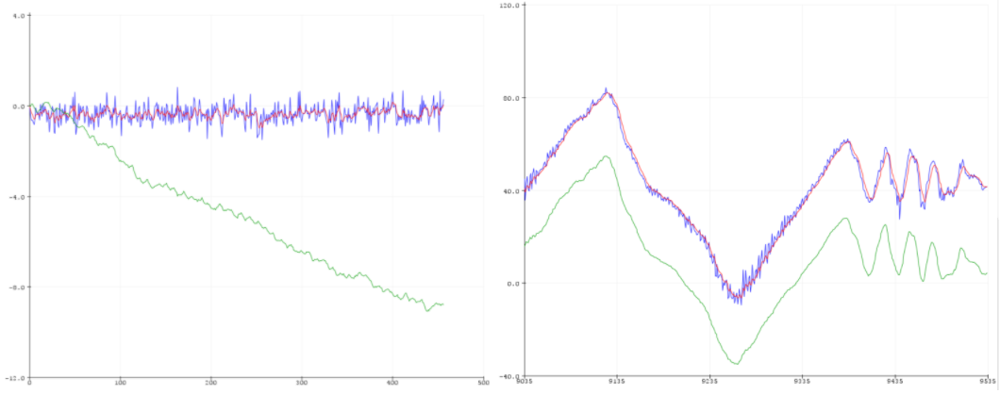
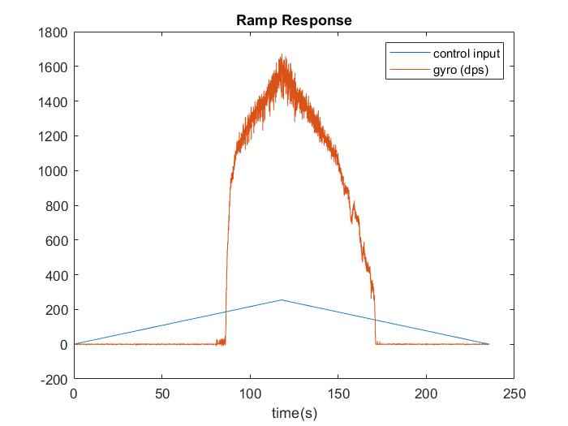
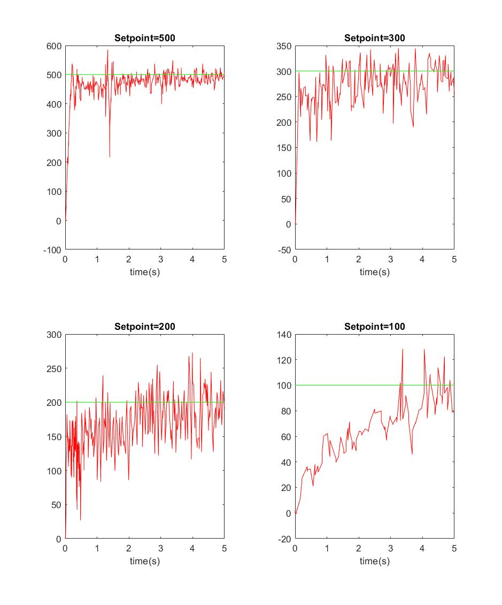
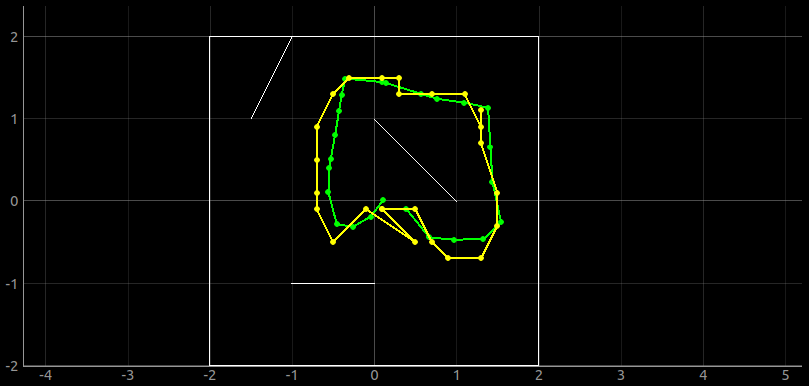
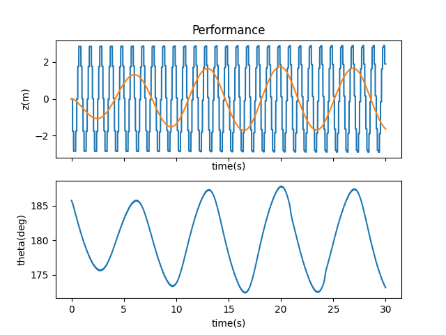

I am an M.Eng. student in mechanical engineering. I received my undergraduate degree from Rensselaer Polytechnic Institute where I majored in mechanical engineering and minored in electrical engineering. My focus area is in controls and mechatronics, and I look forward to learning more about the hardware and software implementation of control theory. You can reach me at dmd354@cornell.edu
Lab 01
Abstract
In this lab, the Arduino IDE was configured to interact with the SparkFun RedBoard Artemis Nano and some of the features of the hardware were tested. A program was also written to have the onboard LED light up when the microphone detected a whistle. In addition to the Arduino IDE, a virtual machine was also configured for future use.
Part A: The Artemis Board
The “Blink!” example was run and the LED was observed to blink as expected. The SVL baud rate did not need to be lowered from the default (921600 baud). The blinking LED can be seen in the video below.
The code for “Example2_Serial” was downloaded to the board to verify that the serial port works. The video below shows the code being downloaded and then communication is done to and from the board in the serial monitor on the right half of the screen.
The code for “Example4_analogRead” was downloaded to the board to ensure that the board was able to read analog input from the temperature sensor. The video below shows the analog data being read from the board. During this data collection, the Artemis board was held and breathed on to warm it up. It can be seen that the internal temperature measurement started around 27°C and increased to around 32°C.
When the “Example1_MicrophoneOutput” code was initially run, the serial monitor printed a seemingly random collection of symbols indicating some sort of communication error. This bad output can be seen below.
To fix this issue, the baud rate on the serial monitor was adjusted to match that specified in the code (115200 baud). The desired output was then printed correctly. The changing loudest frequency value was observed when talking near the board and when loud vehicles would drive past the nearby window. The functionality of this code running on the hardware was further tested using a tone generator found online. This can be seen in the video below where it can be observed that the program detects a range of frequencies reasonably well.
By watching the Loudest Frequency value change while whistling was attempted, an approximate whistle frequency range was determined to be 750Hz to 1500Hz. The “Example1_MicrophoneOutput” code was slightly modified to light the LED when whistling was detected. This was accomplished by first adding the following line to the setup function to set the LED pin to be an output.
pinMode(LED_BUILTIN, OUTPUT); // initialize digital pin LED_BUILTIN as an output
Then in the function that prints the loudest frequency, before printing, the frequency is checked to see if it is in the whistle range, and if so, the LED is turned on and a message is printed indicating that a whistle was detected. Otherwise, the LED is turned off, and the normal message is printed. This was accomplished with the following lines of code:
if(ui32LoudestFrequency>750 && ui32LoudestFrequency<1500) // if sound is in my whistle range
{
digitalWrite(LED_BUILTIN, HIGH); // turn the LED on (HIGH is the voltage level)
Serial.printf("Loudest frequency: %d WHISTLE DETECTED\n", ui32LoudestFrequency);
}
else
{
digitalWrite(LED_BUILTIN, LOW); // turn the LED off by making the voltage LOW
Serial.printf("Loudest frequency: %d \n", ui32LoudestFrequency);
The operation of this code can be seen in the video below. The video also shows that the Artemis board is operating with power from the battery instead of the USB cable.
Part B: Virtual Machine Setup
A virtual machine was added to VirtualBox by copying the provided OVA file. The image below shows the VirtualBox manager window with the virtual machine to be used in this class selected. The preview window in the image also shows the desktop of the virtual machine to which a Guest Additions CD Image and a shared folder have been added.
Lab 02
Abstract
In this lab, bluetooth communication was established between my computer and the artemis board. This came with a large number of challenges, and the host OS had to be used instead of the virtual machine. However, a connection was established, and data was able to be transferred.
Connecting to the Artemis Board
The first few times main.py was run in the virtual machine the following error appeared:
Then, after unplugging and plugging back in the bluetooth adapter several times, the following error message was printed:
The VM was restarted twice, the USB bluetooth adapter was moved to a different port on the PC, and the board was able to be found. In settings.py, the MAC address was added to Settings["cached"]. When this was done, and main.py was run again, the LED on the Artemis board would blink on and off indicating that a connection had been made.
Around this point, the Artemis board began to act unresponsive after restarting and was found to be getting stuck on line 136 of the distributed Arduino sketch. This issue fixed itself some time later for no apparent reason, then began acting up the next day only to fix itself again.
Additionally, at this point running main.py resulted in the following error message.
This error could not be diagnosed, and the rest of the lab was done on the host machine (Windows 10).
After downloading Python and Bleak on the host OS, main.py was run in the command prompt window. The following errors were found most times the script was run, but after several runs, the board connected. This inconsistency persisted through the rest of the lab.
Pinging the Robot
In main.py, pass was commented out and await theRobot.ping() was uncommented. Then main.py was run and the output was observed in the terminal. The terminal displayed round trip times, about 850 of these recorded times were copied and can be seen in the histogram below.
It can be seen that the largest group of pings took around 100-105ms. The times ranged from 79.8 to 143.6ms and the average time was 101.25ms. The line amdtpsSendData(m_Rcvd, l_Rcvd); in the PING case shows that l_Rcvd is the length of the data being transmitted in the ping. The sketch was modified so that l_Rcvd would be printed in the serial monitor, and it was found to be 99. Therefore, the ping transfers 99 bytes. From this, it was calculated that on average the bluetooth transmission was about 15643 bits per second. This is significantly lower than the serial transmission used in this lab of 115200 baud (115200 bits/sec).
Requesting a Float
In main.py, await theRobot.ping() was commented out and await theRobot.sendCommand(Commands.REQ_FLOAT) was uncommented. Then the REQ_FLOAT case in the Arduino sketch was changed to the following:
case REQ_FLOAT:
Serial.println("Going to send a float");
//TODO: Put a float (perhaps pi) into a command response and send it.
res_cmd->command_type = GIVE_FLOAT; //set command type as GIVE_FLOAT
res_cmd->length=6; //length doesn't matter since the handler will take care of this
((float *)(res_cmd->data))[0] = 1.23f; //put a float into data to send
amdtpsSendData((uint8_t *)res_cmd, 6); //2 bytes for type and length, 4 bytes of data
break;
When run, the terminal showed the following output:
The float displayed on the screen didn’t exactly match the float that was sent (1.23). This shows that data transmission over bluetooth isn’t perfect, and if floats are to be compared, the comparisons may not be accurate if the data was transmitted over bluetooth.
Testing the Data Rate
To transmit data, the following code was added to the main loop in the arduino sketch:
if (bytestream_active)
{
res_cmd->command_type = BYTESTREAM_TX; //set command type to bytestream transmit
res_cmd->length = 14; //length doesn't matter since the handler will take care of this
//TODO: Put an example of a 32-bit integer and a 64-bit integer
//for the stream. Be sure to add a corresponding case in the python program.
//Serial.printf("Stream %d \n", bytestream_active);
((uint32_t *)(res_cmd->data))[0] = 32; //put a 32 bit integer into data to send (4 bytes)
uint64_t num = 64;
memcpy(res_cmd->data+4, &num, 8); //put a 64 bit integer into data to send (8 bytes)
// send a little data
//amdtpsSendData((uint8_t *)res_cmd, 14); //2 bytes for type and length, 12 bytes of data
// send a lot of data
uint64_t num2 = 65;
memcpy(res_cmd->data+12, &num2, 8); //put a 64 bit integer into data to send (8 bytes)
uint64_t num3 = 66;
memcpy(res_cmd->data+20, &num3, 8); //put a 64 bit integer into data to send (8 bytes)
uint64_t num4 = 67;
memcpy(res_cmd->data+28, &num4, 8); //put a 64 bit integer into data to send (8 bytes)
uint64_t num5 = 68;
memcpy(res_cmd->data+36, &num5, 8); //put a 64 bit integer into data to send (8 bytes)
uint64_t num6 = 69;
memcpy(res_cmd->data+44, &num6, 6); //put a 64 bit integer into data to send (8 bytes)
uint64_t num7 = 70;
memcpy(res_cmd->data+52, &num7, 8); //put a 64 bit integer into data to send (8 bytes)
uint64_t num8 = 70;
memcpy(res_cmd->data+60, &num8, 8); //put a 64 bit integer into data to send (8 bytes)
amdtpsSendData((uint8_t *)res_cmd, 70); //2 bytes for type and length, 68 bytes of data
//Print time
unsigned long t = micros();
Serial.printf("Package %d sent at %d us \n", pkg_count, t);
pkg_count++;
}
In addition to this code, bytestream_active was set to 1 in the START_BYTESTREAM_TX case, and pkg count was initialized as a global variable with a value of 0. As it appears, the above code transmits a byte stream of one 32-bit integer and eight 64-bit integers (70-byte command), but if the line under // send a little data is uncommented and the 15 lines under // send a lot of data are commented out, the code will instead only transmit one 32 bit integer and one 64 bit integers (14-byte command). This code also has the board serial print every time a package is sent along with the time that it was sent.
In main.py, await theRobot.sendCommand(Commands.START_BYTESTREAM_TX) was added to myRobotTasks and all other commands were commented out. Additionally the following lines were added to the simpleHandler function:
if (code == Commands.BYTESTREAM_TX.value):
print(unpack("<Iqqqqqqqq", data)) #unpacks 1 4-byte int and 8 8-byte int
The code above would print the package sent for the 70 byte command case. For the 14-byte case, "<Iq" was used as the format string to indicate that data only includes one 4-byte number and one 8-byte number.
When the code was run for the 70-byte case, the output on the serial monitor and command line window looked like the following image.
From testing the code for both package cases, the histograms below were made for the amount of time that passed between each package being sent.
It can be seen that the largest amount of measurements of time was between 10.86 and 11.06ms for the smaller package, and between 11.14 and 11.34ms for the larger package. On average, the 14-byte packages were sent every 11.03ms and the 70-byte packages were sent every 11.16ms. This indicates that the larger packages sent slightly slower. For the 14-byte test, 932 packages were sent, but the terminal only printed 811 of them indicating that about 13% of them were dropped. For the 70-byte test, 904 packages were sent, but the terminal only printed 766 of them indicating that about 15% of them were dropped.
Lab 03
Abstract
In this lab, several observations, measurements, and calculations were made for both the physical remote control car and the simulated robot.
Part A: Characterizing the Car
Dimensions
Several dimensions were measured at least four times using a pair of digital callipers. The dimensions measured can be found in the image below.
The averaged measurements were:
Wheel Diameter: 77.4 mm
Distance Between Axle Centers: 80.0 mm
Width: 139.1 mm
Length: 145.8 mm
These dimensions may be useful when coming up with a model for the platform. The most useful dimension is most likely the wheel diameter which can be used to determine distance the car will travel per revolution as well as the tangential force that torque on the wheels will cause.
Backlash
The backlash of the gear train driving the wheels was measured by marking one of the little treads on one wheel with a pencil, and holding that wheel fixed so that the marked tread is the closest to the other wheel. Then the other wheel was turned as far as possible in one direction without straining the system. Then the tread on the turned wheel closest to the already marked tread was also marked. The turned wheel was then turned the opposite direction in a similar manner. From this position, the number of treads between the turning wheels starting and final position were counted. This is diagrammed in the figure below.
From the knowledge that each wheel has 92 little treads, it was calculated from 4 trials that the backlash is approximately 11.7 degrees. This measurement can only be seen as approximate because of the amount of play in the system and how easily the plastic bent. Knowing that this much backlash exists in the system will be useful since it will add some mechanical delay between the motor turning and the wheels turning.
Wheel Speed
The speed of the car’s wheels was measured using a slow-motion camera. This was done by securing the car in place, putting tape on one wheel, and comparing that piece of tape’s position to the position of a stationary piece of tape. A computer with a stopwatch was also placed in the camera’s field of view. The setup for this test can be seen below.
Slow-motion videos were recorded of both the right and left wheels spinning forward and backwards in both “speedy” and “slowly” modes. These videos can be seen below.
The speed was calculated by using the stopwatch to find the time for the wheel to fully rotate 4 times and averaging the values calculated from two sets of rotations for each case. The rotations chosen were several seconds after the start, and several seconds before the stop of the control input to ensure that the spinning was steady-state. The spinning speed was found to be about 12.9 rev/s in “Slowly” mode and 14.4 rev/s in “Speedy” mode. Although the wheels will turn slower when actually moving the car due to friction and the added load of the car’s weight, this speed can be used to approximate the max speed the car could go.
Tricks and Performance
Having the car go at full speed in one direction, and then quickly switching the direction momentarily results in the car doing a forward roll as seen in the video below.
The car was found to turn reasonably well around its center. The video below shows the car turning in a roughly 9 inch circle of electrical tape in both “speedy” and “slowly” modes.
It can be seen that the car can stay in the circle for at least one or two rotations. It tended to drift off to the right, but upon further inspection of the floor, it was found to be slightly inclined. This test shows that an approximation of the car turning about its axis like a unicycle-robot model could be accurate.
Summary
The values measured and calculated are tabulated below.
Part B: Characterizing the Virtual Robot
All of the steps were followed to install software dependencies, set up the base code, start the simulator, and start the keyboard teleoperation tool. Only one small error was encountered. This error can be found in the picture below and was corrected by simply running the command given in the error message.
The teleop commands were used to move the robot around. This can be seen in the video below in which the speed is adjusted and the robot is driven around.
The video shows the following aspects of the simulation environment:
When the robot collides with a wall a warning triangle appears over the robot, and it stops moving
Teleoperation works from the perspective view
The robot could be dragged and dropped with the cursor
when the robot is placed outside of the maze area and is driven out of the workspace, the workspace extends
There didn't seem to be lower limits on the speed of the robot as the values could be changed to be arbitrarily small in the terminal and the robot would just move slower and slower. However, the robot seemed to have an upper limit on the linear and angular speed as the value could be increased in the terminal, but the robot would stop accelerating at a certain point. This max speed was measured using the video below in which the input speeds were made very large and the robot was driven straight and rotated.
By looking at the robot pose and the clock at various times, the maximum linear speed was calculated to be 1 unit/sec and the maximum angular speed was calculated to be 90 deg/sec.
Lab 04
Abstract
In this lab, the Artemis board was connected to the motors of the car through the motor driver and open loop control was implemented. Open loop control was also explored in the simulation environment.
Part A: Hardware Open Loop Control
The artemis board was connected to the motor driver, and “Example1_wire” was run to find the address of the driver. The address was found to be 0x5D which matches the the default address shown on Sparkfun’s website.
Taking apart the car involved four sets of screws. The locations of these screws is diagrammed below.
Instead of cutting the power cables from the control PCB like some kind of barbarian, I desoldered them.
To route the Qwiic connector cable from inside the car to the artemis board, the hole where the power button was actuated through was drilled out to a 5/16th inch hole. This hole can be seen below.
The motor driver was connected to the motors and battery and its placement inside the car can be seen below.
The gray cover for the button piece was cut in half and put over the drilled hole to keep a classy look. The Artemis Board and its battery were then taped to the outside of the car to keep them temporarily secured, but still easily accessible. The assembled car can be seen below.
The examples\MotorTest code was modified for use in this lab. The I2C address in the code was changed to match that of the motor driver.
The minimum value for which the motors would turn was found by using the code below and seeing on the serial window at what input the wheels started to turn.
//set motor constants
#define L_MOTOR 0
#define R_MOTOR 1
#define FWD 0
#define REV 1
void loop()
{
//***** Operate the Motor Driver *****//
// It uses .setDrive( motorName, direction, level ) to drive the motors.
for (int i = 50; i < 70; i++)
{
Serial.printf("Right Side, current input: %d\n", i);
myMotorDriver.setDrive( R_MOTOR, FWD, i);
delay(1000);
}
myMotorDriver.setDrive( R_MOTOR, FWD, 0);
for (int i = 50; i < 70; i++)
{
Serial.printf("Left Side, current input: %d\n", i);
myMotorDriver.setDrive( L_MOTOR, FWD, i);
delay(1000);
}
myMotorDriver.setDrive( L_MOTOR, FWD, 0);
}
The wheels were found to turn at rather inconsistent values, but by averaging several values, the wheels were found to turn around an input of 59 (σ=1.2) for the left side, and 54 (σ=2.0) for the right side. This of course is dependent on how fresh the battery is, and with a slightly used battery the values were found to be 64 (σ=4.0) and 59 (σ=1.2). It was also found that both wheels would turn at much lower inputs if given a little nudge. The important takeaway here is that inputs below 70 should probably be avoided unless the wheels are already turning in that direction.
The following lines were found on the Sparkfun page and added to the setup code so that the motors would have the same forward direction.
// motor 1 inversion so that forward is the same for both motors
while ( myMotorDriver.busy() ); //Waits until the SCMD is available.
myMotorDriver.inversionMode(1, 1); //invert motor 1
Then the code below was written to test how straight the car drives.
//set motor constants
#define L_MOTOR 0
#define R_MOTOR 1
#define FWD 0
#define REV 1
void loop()
{
//***** Operate the Motor Driver *****//
// It uses .setDrive( motorName, direction, level ) to drive the motors.
//Set both motors going forward at a medium speed for some time
myMotorDriver.setDrive( L_MOTOR, FWD, 100);
myMotorDriver.setDrive( R_MOTOR, FWD, 100);
delay(2400);
//Turn off both motors
myMotorDriver.setDrive( L_MOTOR, FWD, 0);
myMotorDriver.setDrive( R_MOTOR, FWD, 0);
while(1); //stop after one run
}
The following video shows the above code running when the car is placed on a straight piece of tape that has perpendicular pieces of tape that indicate 6 feet.
It can be seen that at the end of 6 feet, the car is consistently still partially overlapping with the tape. This shows that the car can go pretty straight without a calibration factor.
The code below was then written to demonstrate open loop control.
for (int i = 0; i < 4; i++) //run through these commands 4 times
{
//drive forward for a bit
myMotorDriver.setDrive( L_MOTOR, FWD, 80);
myMotorDriver.setDrive( R_MOTOR, FWD, 80);
delay(1000);
//Turn Right for a bit
myMotorDriver.setDrive( L_MOTOR, FWD, 200);
myMotorDriver.setDrive( R_MOTOR, REV, 200);
delay(1500);
//drive backward for a bit
myMotorDriver.setDrive( L_MOTOR, REV, 100);
myMotorDriver.setDrive( R_MOTOR, REV, 100);
delay(800);
//Turn Left for a bit
myMotorDriver.setDrive( L_MOTOR, REV, 200);
myMotorDriver.setDrive( R_MOTOR, FWD, 200);
delay(1000);
}
// stop motors
myMotorDriver.setDrive( L_MOTOR, REV, 0);
myMotorDriver.setDrive( R_MOTOR, REV, 0);
while(1); //stop
The code includes commands to drive and turn in all directions at various speeds for various times. The code running on the robot can be seen in the video below.
Part B: Simulation Open-Loop Control
Before starting this part, the VM hard disk space was expanded to 16 GB, and the provided Jupyter Lab tutorial was followed.
The base code was set up, and the Jupyter Lab Notebook was started. By running all of the code blocks in the notebook and playing around with the code in the Move the Robot section, the basic function of the Robot class was understood.
The following code was written to have the robot follow a roughly rectangular loop.
steps = 12 # number of steps to take (3 times around the square)
step = 0 # current step
while step < steps:
#rotate at 90deg/sec for 1 second
robot.set_vel(0,1.5708) # rotate
time.sleep(1)
#go foward for a bit
robot.set_vel(.5,0)
time.sleep(2)
#stop robot
robot.set_vel(0,0)
The code works by having the robot turn at 90 deg/sec for 1 second to turn a right angle, and then going forward for two seconds. By looping these two commands, a square path was created. This operation assumes that the angular velocity control is the exact speed that the robot moves. This wouldn’t work as well on a physical system, since the angular velocity couldn’t be controlled with such accuracy.
The operation of the code can be seen in the video below.
Footprints were turned on so that the path would be more clear. It can be seen that the robot follows a very square path.
Lab 05
Abstract
In this lab, the functionality of the proximity sensor and time of light sensor were explored. Then obstacle avoidance code was implemented on the physical and simulated robot.
Part A: Hardware Obstacle Avoidance
The following default I2C addresses were found on the datasheets for the two sensors used in this lab:
VCNL4040 Proximity Sensor: 0x60
VL53L1X Time of Flight (ToF) Sensor: 0x52
The proximity sensor has a range of 0-200mm with no dead zone and SparkFun claims that this sensor is better for detecting qualitative detection than distance measurements. The ToF sensor has a range of 40-400mm. Because of this, I plan on mounting both sensors on the front of the car and using the proximity sensor for distance measurements less than 4cm from the car, and the ToF sensor for all other distance measurements.
Because of this proposed setup, the robot will be unable to detect any objects not directly in front of it.
The following table discusses several distance sensors based on infrared transmission. This information in this table was found in the Lecture 3 Slides.
The Arduino library manager was used to uninstall the libraries for both sensors.
Proximity Sensor
By running Example1_wire the I2C address of the proximity sensor was found to be 0x60. This matches what is specified on the datasheet.
The image below shows the setup used to map the sensor readings to actual distances.
The items in the following image were used to test the proximity sensor. There is the box that the Artemis components came in that is shiny and red, a stack of post-it notes that is white and flat, and a book that has a black and bumpy cover.
The results from testing the sensor in two different lighting conditions can be found below. The first lighting condition was the normal amount of light I have in my apartment when working which I would expect to be the typical operating condition for the robot, and the second condition was with the lights off and blinds closed since the robot may end up under furniture where it is dark.
The black target resulted in the weakest measurements, and the lighting condition seemed to have very little effect on the results.
The main loop was changed to just be the following to find out how long it takes to read a value:
unsigned long t0 = micros(); // start time
unsigned int proxValue = proximitySensor.getProximity();
unsigned long delt = micros() - t0;
Serial.println(delt);
It was found that it takes about 630 μs (σ=0.76) to read the sensor value.
Time of Flight Sensor
By running Example1_wire the I2C address of the ToF sensor was found to be 0x29. This does not match the default specified on the datasheet, but the datasheet does specify that the address is programmable so it can be changed.
The ToF sensor was found to need calibration, so Example7_Calibration was run. It was found that this code didn’t work as provided. startRanging() and stopRanging() commands had to be added to the code that looks for a low distance to initialize the calibration. Once this was done, the calibration code worked.
Since the robot has a maximum speed around 2.7m/s as found in Lab 3, taking a distance reading every 55 ms would result in the robot having 15cm of space to react after seeing something. Because of the ToF sensor’s large range, this seemed like a reasonable range, so the timing budget was set to 50, and the inter measurement period was set to 5 with the following lines put into the setup code.
Based on the max speed of 2.7m/s it was determined that the robot could cover the max range distances in the following times:
Short (1.3m): 0.481s
Medium (3m): 1.11s
Long (4m): 1.48s
For the application of obstacle avoidance, half a second to react to an obstacle seemed sufficient, so the minimum distance mode was set so that the robot could get really close to obstacles:
distanceSensor.setDistanceModeShort();
When Example3_StatusAndRate was run, it was found that when an object would move rapidly in front of the sensor, the range status would change to Wrapped target fail and occasionally sigma fail. This means that the sensor measurements may not be as accurate when the car is going fast or there are fast moving obstacles around it.
The following code was used to test the sensor:
void setup(void)
{
Wire.begin();
Serial.begin(115200);
Serial.println("VL53L1X Qwiic Test");
//VL53L1_SetInterMeasurementPeriodMilliSeconds(&VL53L1Dev, 1000 );
if (distanceSensor.begin() != 0) //Begin returns 0 on a good init
{
Serial.println("Sensor failed to begin. Please check wiring. Freezing...");
while (1)
;
}
Serial.println("Sensor online!");
distanceSensor.setTimingBudgetInMs(50);
distanceSensor.setIntermeasurementPeriod(5);
distanceSensor.setDistanceModeShort();
distanceSensor.startRanging(); //just continue ranging the whole time to save time
}
void loop(void)
{
long startTime = millis();
while (!distanceSensor.checkForDataReady())
{
delay(1);
}
int distance = distanceSensor.getDistance(); //Get the result of the measurement from the sensor
distanceSensor.clearInterrupt();
long endTime = millis();
Serial.print("Distance(mm): ");
Serial.print(distance);
float distanceInches = distance * 0.0393701;
float distanceFeet = distanceInches / 12.0;
Serial.print("\tDistance(ft): ");
Serial.print(distanceFeet, 2);
Serial.print("\tRanger time: ,");
Serial.print((float)(endTime - startTime), 2);
Serial.println();
}
The time for one ranger measurement was found, on average, to be 44.9ms (σ=1.18).
By using a similar setup to that used for the proximity sensor, data was found for a range of distances. This time instead of using the white post-it notes, the gray target that came with the kit was used. This was only done in normal lighting conditions. The data is plotted below.
The sensor was fairly accurate between 40 and 600mm the worst measurement was found to be 13% off of the true value for the gray target, 16% for the red target, and 32% for the black target. Once again, the black, bumpy target results in the worst data.
To test the range capabilities with these settings, the sensor was pointed at a wall and moved away from it until it was no longer able to take readings (returned 0 instead of a value). With these settings this occurred around 2.06m.
Obstacle Avoidance
To mount the sensors on the car, a cardboard “bumper” was made for the front of the car. Another cardboard “bumper” was made for the back of the car which has a slot to hold the Artemis Board’s battery. These Cardboard components can be seen below.
The car assembled with the sensors can be seen below.
It was found that the ToF sensor would occasionally detect the floor and think it was an obstacle, so some tape was added to slightly angle the sensors upwards:
The following code was written to test how fast the robot could go and still stop before hitting an obstacle.
#include <Arduino.h>
#include <stdint.h>
#include "SCMD.h"
#include "SCMD_config.h" //Contains #defines for common SCMD register names and values
#include <ComponentObject.h>
#include <RangeSensor.h>
#include <SparkFun_VL53L1X.h>
#include <vl53l1x_class.h>
#include <vl53l1_error_codes.h>
#include <Wire.h>
#include "SparkFun_VL53L1X.h" //Click here to get the library: http://librarymanager/All#SparkFun_VL53L1X
//Optional interrupt and shutdown pins.
#define SHUTDOWN_PIN 2
#define INTERRUPT_PIN 3
SCMD myMotorDriver; //This creates the main object of one motor driver and connected slaves.
SFEVL53L1X distanceSensor;
//Uncomment the following line to use the optional shutdown and interrupt pins.
//SFEVL53L1X distanceSensor(Wire, SHUTDOWN_PIN, INTERRUPT_PIN);
void setup(void)
{
Serial.begin(115200);
//motor setup
myMotorDriver.settings.commInterface = I2C_MODE;
myMotorDriver.settings.I2CAddress = 0x5D; //config pattern is "1000" (default) on board for address 0x5D
myMotorDriver.settings.chipSelectPin = 10;
//*****initialize the driver get wait for idle*****//
while ( myMotorDriver.begin() != 0xA9 ) //Wait until a valid ID word is returned
{
Serial.println( "ID mismatch, trying again" );
delay(500);
}
Serial.println( "ID matches 0xA9" );
// Check to make sure the driver is done looking for slaves before beginning
Serial.print("Waiting for enumeration...");
while ( myMotorDriver.ready() == false );
// motor 1 inversion so that foward is the same for both motors
while ( myMotorDriver.busy() ); //Waits until the SCMD is available.
myMotorDriver.inversionMode(1, 1); //invert motor 1
while ( myMotorDriver.busy() );
myMotorDriver.enable();
// sensor setup
Wire.begin();
Serial.println("VL53L1X Qwiic Test");
//VL53L1_SetInterMeasurementPeriodMilliSeconds(&VL53L1Dev, 1000 );
if (distanceSensor.begin() != 0) //Begin returns 0 on a good init
{
Serial.println("Sensor failed to begin. Please check wiring. Freezing...");
while (1)
;
}
Serial.println("Sensor online!");
distanceSensor.setTimingBudgetInMs(50);
distanceSensor.setIntermeasurementPeriod(5);
distanceSensor.setDistanceModeShort();
distanceSensor.startRanging(); //just continue ranging the whole time to save time turning it on/off
}
//set motor constants
#define L_MOTOR 0
#define R_MOTOR 1
#define FWD 0
#define REV 1
void loop(void)
{
while (!distanceSensor.checkForDataReady())
{
delay(1);
}
int distance = distanceSensor.getDistance(); //Get the result of the measurement from the sensor
distanceSensor.clearInterrupt();
//Serial.print("Distance(mm): ");
//Serial.print(distance);
byte rangeStatus = distanceSensor.getRangeStatus();
if(rangeStatus==0) //only act if sensor reading was good
{
if(distance==0 || distance>300) //0 if there is no object nearby
{
//drive straight
myMotorDriver.setDrive( L_MOTOR, FWD, 125);
myMotorDriver.setDrive( R_MOTOR, FWD, 125);
}
else
{
// hit the breaks!
myMotorDriver.setDrive( L_MOTOR, REV, 255);
myMotorDriver.setDrive( R_MOTOR, REV, 255);
delay(300);
//stop motors
myMotorDriver.setDrive( L_MOTOR, REV, 0);
myMotorDriver.setDrive( R_MOTOR, REV, 0);
while(1); //wait for reset
}
}
//Serial.println();
}
Through trial and error, it was found that a control input of 125 was pretty much the fastest I could have the robot go without it just running into things and still respond relatively close to obstacles. To stop the robot, a brief reverse control input is applied to stop the robot from coasting.
The code running on the robot can be seen in the video below.
The robot can be seen to consistently stop itself before hitting the wall.
The main loop in the code above was changed so that when the robot detected an obstacle, it would stop turn, and continue going:
void loop(void)
{
while (!distanceSensor.checkForDataReady())
{
delay(1);
}
int distance = distanceSensor.getDistance(); //Get the result of the measurement from the sensor
distanceSensor.clearInterrupt();
//Serial.print("Distance(mm): ");
//Serial.print(distance);
byte rangeStatus = distanceSensor.getRangeStatus();
if(rangeStatus==0) //only act if sensor reading was good
{
if(distance==0 || distance>300) //0 if there is no object nearby
{
myMotorDriver.setDrive( L_MOTOR, FWD, 120);
myMotorDriver.setDrive( R_MOTOR, FWD, 120);
}
else
{
// hit the breaks
myMotorDriver.setDrive( L_MOTOR, REV, 225);
myMotorDriver.setDrive( R_MOTOR, REV, 225);
delay(200);
//turn
myMotorDriver.setDrive( L_MOTOR, FWD, 200);
myMotorDriver.setDrive( R_MOTOR, REV, 200);
delay(300);
}
}
}
This code can be seen running in the following video.
The robot does a pretty good job at detecting and avoiding large objects, but when there are narrower objects or objects that aren’t directly in front of it, it doesn't detect them, and sometimes runs into them.
In an attempt to get the robot to detect narrower obstacles, the proximity sensor reading was added to the object detection code as follows.
void loop(void)
{
while (!distanceSensor.checkForDataReady())
{
delay(1);
}
int distance = distanceSensor.getDistance(); //Get the result of the measurement from ToF sensor
unsigned int proxValue = proximitySensor.getProximity(); //Get result from prox sensor
distanceSensor.clearInterrupt();
/*
Serial.print("Distance(mm): ");
Serial.print(distance);
Serial.print("\tProx: ");
Serial.print(proxValue);
Serial.print("\n");
*/
byte rangeStatus = distanceSensor.getRangeStatus();
if(rangeStatus==0) //only act if sensor reading was good
{
if((distance==0 || distance>300) && proxValue<20) //0 if there is no object nearby
{
myMotorDriver.setDrive( L_MOTOR, FWD, 120);
myMotorDriver.setDrive( R_MOTOR, FWD, 120);
}
else
{
// hit the breaks
myMotorDriver.setDrive( L_MOTOR, REV, 225);
myMotorDriver.setDrive( R_MOTOR, REV, 225);
delay(200);
//turn
myMotorDriver.setDrive( L_MOTOR, FWD, 200);
myMotorDriver.setDrive( R_MOTOR, REV, 200);
delay(300);
}
}
Appropriate setup for the proximity sensor was also added to the code. This addition did not make a dramatic difference on the robot's obstacle avoidance, and its operation can be seen as slightly improved from before in the following video.
Given more time, further experimentation could have been done on where the sensors are placed on the robot as well as tuning of the speed and detection threshold values to improve the robot's performance.
Part B: Simulation Obstacle Avoidance
The same setup process used in the previous lab was used to set up the simulation and jupyter notebook.
To have the simulated robot avoid obstacles code was written to have the robot go forward until it is close to an obstacle, turn, and then continue moving forward. This code can be seen below.
def perform_obstacle_avoidance(robot):
turn_dir = 1
while True:
# Obstacle avoidance code goes here
dist = robot.get_laser_data() # find distance measurement
while(dist>0.3):
robot.set_vel(0.7,0) # drive foward while there is no close obstacle
turn_dir = -turn_dir # keep fliping sign of turn direction to get more random paths
dist = robot.get_laser_data() # find distance measurement
# turn 90 deg when object is detected
robot.set_vel(0,turn_dir*1.5708) # rotate at 90 deg/sec
time.sleep(1) # continue rotating for 1 sec
perform_obstacle_avoidance(robot)
The code has the robot turn at 90 degree angles because it was found that if the robot stays perpendicular or parallel to the walls is much less likely to collide with them. When smaller angle turns were made collisions were found to occur when the robot would be driving nearly parallel to a wall, and slowly crash into it. The code I wrote also has a variable turn_dir that controls the sign of the angular speed command given to the robot. This variable is continuously flipped between +1 and -1 when the robot is going forward. The result of this is that when the robot detects that it is close to an obstacle, it will turn in an approximately random direction. This was implemented so that the robot doesn’t just get stuck in a boring rectangular pattern.
Through trial and error it was found that a linear speed of 0.7 and sensor distance to stop going forward of 0.3 result in the robot going as fast as possible and getting as close to the walls as possible while consistently avoiding collisions. For linear speed of 0.8 or distance of 0.2. The robot was found to crash. The operation of the code can be seen in the following video.
It can be seen that the robot does a good job of avoiding collisions for a decent amount of time. However it was found that given enough time, the robot drifts away from the desired horizontal and vertical directions and crashes as seen at the end of the video.
Lab 06
Abstract
In this lab, the IMU was set up and explored, PID control was implemented on the hardware, and the odometry of the simulated robot was explored.
Part A: IMU, PID, and Odometry
Setting up the IMU
By running Example1_wire the I2C address of the proximity sensor was found to be 0x69. This matches what is specified on Sparkfun’s website.
The Example1_Basics code was run to observe the change in sensor values. When still, the acceleration was found to return about 1000mg for whichever axis was vertical, and around 0mg for the other two axes. When moving back and forth, the accelerometer values would change. When rotating the gyroscope values would change from the nearly zero values that they rest at when not moving.
Accelerometer
The main loop of Example1_Basics was changed to the following to print the pitch and roll values calculated from the accelerometer. math.h was included, and global variables were defined for pitch and roll.
void loop() {
if( myICM.dataReady() ){
myICM.getAGMT(); // The values are only updated when you call 'getAGMT'
pitch_a = atan2(myICM.accX(),myICM.accZ())*180/M_PI;
Serial.print("\nPitch = ");
printFormattedFloat( pitch_a, 3, 2 );
roll_a = atan2(myICM.accY(),myICM.accZ())*180/M_PI;
Serial.print(",\tRoll = ");
printFormattedFloat( roll_a, 3, 2 );
delay(30);
}
else{
Serial.println("Waiting for data");
delay(500);
}
}
The table below shows the accelerometer positioning and sample readings for rolls and pitches of -90°, 0°, and 90°.
It can be seen that the measured values were always within 6° of the expected values of ±90° and within 2° of the expected values of 0°. This shows that the readings are fairly accurate, and should be good enough for use without calibration (especially with the uncertainty associated with the levelness of my desk).
To collect data from the sensor being tapped the following code was written to print the x acceleration.
void loop() {
unsigned long t0 = micros(); // start time
if( myICM.dataReady() ){
myICM.getAGMT(); // The values are only updated when you call 'getAGMT'
printFormattedFloat( myICM.accX(), 5, 3 );
Serial.print(",");
unsigned long delt = micros() - t0;
printFormattedFloat( delt, 5, 2 ); // print time between measurements to approximate sampling frequency
Serial.print("\n");
}
else{
Serial.println("Waiting for data");
delay(500);
}
}
Since I don’t currently have a python IDE installed on my computer, I used MATLAB to plot the frequency response of the accelerometer being tapped several times. The MATLAB code is copied below, and the frequency response plot is below that.
data = table2array(readtable('tap_data.csv'));
Ts = mean(data(:,2))*(10^-6); % average sampling time in seconds
Fs = 1/Ts; % sampling frequency
X = data(:,1); % accelerometer data
% plot(X) % check raw data
% X = X(1:end); %trim data
L = length(X); % Length of data
Y = fft(X); % compute Fourier Transform
% Compute the two-sided spectrum P2. Then compute the single-sided spectrum P1 based on P2 and the even-valued signal length L.
P2 = abs(Y/L);
P1 = P2(1:L/2+1);
P1(2:end-1) = 2*P1(2:end-1);
f = Fs*(0:(L/2))/L; % frequency vector
plot(f,P1)
title('Single-Sided Amplitude Spectrum of X(t)')
xlabel('f (Hz)')
ylabel('|P1(f)|')
Although the plot is very noisy, several of the highest peaks are seen to occur at frequencies higher than 190Hz. Using a low-pass filter with a frequency around here should eliminate some of the sensor noise. For the LPF, ⍺ was calculated to be around 0.9 from the equations given in class. The LPF was implemented with the following code.
if( myICM.dataReady() ){
myICM.getAGMT(); // The values are only updated when you call 'getAGMT'
pitch_a = atan2(myICM.accX(),myICM.accZ())*180/M_PI;
Serial.print("\n");
Serial.print(pitch_a);
Serial.print("\t");
pitch_a_LPF = alpha*pitch_a+(1-alpha)*old_pitch_a;
old_pitch_a = pitch_a_LPF;
Serial.print(pitch_a_LPF);
Serial.print("\t");
roll_a = atan2(myICM.accY(),myICM.accZ())*180/M_PI;
Serial.print(roll_a);
Serial.print("\t");
roll_a_LPF = alpha*roll_a+(1-alpha)*old_roll_a;
old_roll_a = roll_a_LPF;
Serial.print(roll_a_LPF);
Serial.print("\t");
delay(30);
}
The alpha value of 0.9 was found to not really reduce the noise in the signal, so the value was lowered to 0.3 which did a much better job of making the signal smooth. However, this also made the measurement lag a little more. Some sample data from the serial plotter can be found below. The filtered readings (red and yellow) are significantly less noisy.
Gyroscope
Code was added to calculate roll, pitch and yaw with the gyroscope:
if( myICM.dataReady() )
{
t0 = micros();
myICM.getAGMT(); // The values are only updated when you call 'getAGMT'
Serial.print("\n");
//---------------------roll---------------------
roll_a = -atan2(myICM.accY(),myICM.accZ())*180/M_PI;//flip sign to be consistent with gyro data
Serial.print(roll_a);
Serial.print("\t");
roll_a_LPF = alpha*roll_a+(1-alpha)*old_roll_a;
old_roll_a = roll_a_LPF;
Serial.print(roll_a_LPF);
Serial.print("\t");
roll_g = roll_g-myICM.gyrX()*(float)dt/1000000;
Serial.print(roll_g);
Serial.print("\t");
//---------------------pitch---------------------
pitch_a = atan2(myICM.accX(),myICM.accZ())*180/M_PI;
Serial.print(pitch_a);
Serial.print("\t");
pitch_a_LPF = alpha*pitch_a+(1-alpha)*old_pitch_a;
old_pitch_a = pitch_a_LPF;
Serial.print(pitch_a_LPF);
Serial.print("\t");
pitch_g = pitch_g-myICM.gyrY()*(float)dt/1000000;
Serial.print(pitch_g);
Serial.print("\t");
//---------------------yaw---------------------
yaw_g = yaw_g-myICM.gyrZ()*(float)dt/1000000;
Serial.print(yaw_g);
*/
delay(30);
dt = (micros()-t0); //step size in microseconds
}
The plots below show a comparison between the accelerometer pitch reading (blue), the filtered accelerometer pitch reading (red), and the gyroscope reading (green). The plot on the left shows the results when the sensor isn't moved and the plot on the right shows the results when the sensor is rotated.

The gyroscope gives a much less noisy reading, but drifts significantly. Similar results were obtained for roll:
Changing the sampling frequency did not seem to have a significant effect on the measured values. I would attribute this to the way I calculate the step size in my code based on whatever step size actually occurs.
A complimentary filter was implemented to fuse the two sensor readings:
if( myICM.dataReady() ){
t0 = micros();
myICM.getAGMT(); // The values are only updated when you call 'getAGMT'
Serial.print("\n");
//---------------------roll---------------------
roll_a = -atan2(myICM.accY(),myICM.accZ())*180/M_PI;//flip sign to be consistent with gyro data
roll_a_LPF = 0.2*roll_a+(1-0.2)*old_roll_a;
old_roll_a = roll_a_LPF;
roll_g = roll_g-myICM.gyrX()*(float)dt/1000000;
roll = (old_roll+roll_g*dt/1000000)*(1-alpha)+roll_a_LPF*alpha;
old_roll = roll;
Serial.print(roll);
Serial.print("\t");
//---------------------pitch---------------------
pitch_a = atan2(myICM.accX(),myICM.accZ())*180/M_PI;
pitch_a_LPF = 0.2*pitch_a+(1-0.2)*old_pitch_a;
old_pitch_a = pitch_a_LPF;
pitch_g = pitch_g-myICM.gyrY()*(float)dt/1000000;
pitch = (old_pitch+pitch_g*dt/1000000)*(1-alpha)+pitch_a_LPF*alpha;
old_pitch = pitch;
Serial.print(pitch);
Serial.print("\t");
//---------------------yaw---------------------
yaw_g = yaw_g-myICM.gyrZ()*(float)dt/1000000;
//Serial.print(yaw_g);
delay(30);
dt = (micros()-t0); //step size in microseconds
}
It was found that by pre-filtering the accelerometer with an alpha value of 0.2, and then using the complimentary filter a signal with minimal noise and drift was obtained. This signal can be seen in the video below which shows the serial plot with the sensor being moved around tapped, and then left still.
Magnetometer
The following lines were adapted from the lab instructions to calculate yaw from the magnetometer.
xm = myICM.magX()*cos(pitch*M_PI/180)-myICM.magY()*sin(roll*M_PI/180)*sin(pitch)+myICM.magZ()*cos(roll*M_PI/180)*sin(pitch*M_PI/180); //these were saying theta=pitch and roll=phi
ym = myICM.magY()*cos(roll*M_PI/180) + myICM.magZ()*sin(roll*M_PI/180);
yaw = atan2(ym, xm)*180/M_PI;
Serial.print(yaw);
Serial.print("\t");
The sensor was rotated until the reading was around 0° to find North. The sensor orientation when facing north can be seen below. In the picture my keyboard is approximately parallel with the wall of my apartment.
The yaw value was found to be somewhat robust against small changes in roll and pitch especially if those small angle changes were along the axis perpendicular to the North-South direction.
It was found that when the IMU board was placed directly onto the car body, the magnetometer would no longer be able to read the yaw because of magnetic interference from the car motors. A foam “fin” was constructed to keep the IMU away from the motors which proved to be effective:
PID Control
Code from Labs 2, 5, and 6 were combined to enable all of the sensors, bluetooth, and the motors. The handler in main.py was modified to take the data that I wanted to observe:
if (code == Commands.BYTESTREAM_TX.value):
print(unpack("<LBBff", data)) #unpacks 1 long, 2 chars and 2 floats
The following code was implemented in the arduino sketch to send the current time, motor values, z-axis gyroscope reading, and yaw value to my PC via Bluetooth.
if (bytestream_active)
{
res_cmd->command_type = BYTESTREAM_TX; //set command type to bytestream transmit
res_cmd->length = 14; //length doesn't matter since the handler will take care of this
//TODO: Put an example of a 32-bit integer and a 64-bit integer
//for the stream. Be sure to add a corresponding case in the
//python program.
//Serial.printf("Stream %d \n", bytestream_active);
// pack up data to send
unsigned long t=micros(); //send current time for x axis
memcpy(res_cmd->data, &t, 4);
memcpy(res_cmd->data+4, &L_motor_val, 1);
memcpy(res_cmd->data+5, &R_motor_val, 1);
memcpy(res_cmd->data+6, &gyro_z, 4);
memcpy(res_cmd->data+10, &yaw_g, 4);
amdtpsSendData((uint8_t *)res_cmd, 16); //2 bytes for type and length, 14 bytes of data
}
The code below was written to have the robot ramp up the control input to turn around its axis and then ramp back down while collecting yaw data.
counts_control++; //increment counts
if(counts_control>200)
{
// if its time for the next motor value, incease/decrease it
if(increase)
{
L_motor_val++;
R_motor_val++;
}
else
{
L_motor_val--; //decrease speed
R_motor_val--;
}
counts_control=0;
if(L_motor_val==255||L_motor_val==0)
{
increase = !increase; //switch direction if cant increase anymore
}
}
//set motors
myMotorDriver.setDrive( L_MOTOR, REV, L_motor_val);
myMotorDriver.setDrive( R_MOTOR, FWD, R_motor_val);
if( myICM.dataReady() )
{
myICM.getAGMT(); // The values are only updated when you call 'getAGMT'
//---------------------yaw---------------------
gyro_z = myICM.gyrZ(); //z measurement from gyroscope (angular speed)
yaw_g = yaw_g-gyro_z*(float)dt/1000000;
xm = myICM.magX()*cos(pitch*M_PI/180)-myICM.magY()*sin(roll*M_PI/180)*sin(pitch)+myICM.magZ()*cos(roll*M_PI/180)*sin(pitch*M_PI/180); //these were saying theta=pitch and roll=phi
ym = myICM.magY()*cos(roll*M_PI/180) + myICM.magZ()*sin(roll*M_PI/180);
yaw = atan2(ym, xm)*180/M_PI;
Serial.println(gyro_z);
}
else{
Serial.println("Waiting for data");
delay(500);
}
Around this point the connectors for one of my batteries broke so I had to take some time to solder that back together:
After uploading my code, the motors seemed to ramp up and down as expected when the robot was lifted off of the ground, but when on the ground, it showed a very jerky response once it started spinning:
The data obtained from one of these tests can be seen as less than desirable:
This problem persisted throughout three days of debugging and no solution was found. This process is mostly documented on Campuswire.
Eventually, I found that my issue was some combination of a week motor driver, and a floor that isn’t slippery enough. A new motor driver was put in the car, and the rest of the tests were run on the lab floor with some water on it to minimize friction as much as possible.
I found that the setup code I had written to expand the limit of values read by the gyroscope did not work. I tried implementing the code from the example code and I still found that my readings were limited to 250. This was resolved after much debugging by moving the setup code for the IMU to be at the very end of my setup function. This mysteriously solved the problem.
With my gyroscope working, and the slippery setup, the following data was obtained for the ramp response.

The deadband before the robot starts spinning is up to an input of about 185, but it begins moving a little bit before that. The deadband once the robot is already spinning can be seen to be inputs below around 140. The maximum rotational speed recorded by the gyroscope was around 1590 dps. In this case, both motors started and stopped spinning pretty much at the same time.
To find the lowest speed I could reliably have the robot rotate at, several constant input values were tried. The data for each of these cases is plotted below.
At an input of 160 spinning at a rate around 630 dps is maintained. Below this, the motors are not able to overcome friction, and the robot just jerks around.
From lab 5, it was found that the ToF sensor takes about 45ms between measurements. MATLAB code was written to calculate the change in values associated with a rotational scan:
dt = 0.045; % time between sensor readings (s)
omega = 630; % turning speed (deg/sec)
r = 0.5; % distance from wall (m)
start_angle = 0; % start angle (deg)
final_angle = start_angle+omega*dt;
d0 = r/cos(start_angle*pi/180);
d1 = r/cos(final_angle*pi/180);
w0 = d0*sin(start_angle*pi/180);
w1 = d1*sin(final_angle*pi/180);
fprintf('orientation changed by %d degrees\n', final_angle-start_angle);
fprintf('distance reading changed by %d mm\n', (d1-d0)*1000);
fprintf('distance along wall between readings = %d mm\n', (w1-w0)*1000);
For a rotational speed of 630 dps,the orientation would change by 28.3° between measurements. If staring perpendicular to a wall 0.5m away, the distance reading should change by 68.1mm and the reading would be 27.0mm away from the previous measurement along the wall. If staring at a 45° to the wall, the distance reading should change by 1037mm and the reading would be 1171mm away from the previous measurement along the wall. At this speed, an accurate rotational scan could not be achieved.
For the feedback controller entirely heuristic methods and a setpoint of 900 dps were used for tuning. Proportional control was implemented first because the simplest solution should always be tried first to avoid unnecessary complexity. Proportional control was implemented with the code below.
Results of several values of proportional gain are shown below.
Note: all plots from the feedback control tests show the setpoint in green, the gyroscope reading (dps) in red, and the control input magnitude in blue.
A proportional gain of 1 gives a very stable response, but shows significant steady state error. A gain of 2 does a pretty good job of reducing this error. A gain of 5 ends up saturating the control input very often which is undesirable.
To further reduce the steady state error, integral control was added with the following code.
if (BT_connected) //start after bluetooth connection made
{
if( myICM.dataReady() )
{
myICM.getAGMT(); // The values are only updated when you call 'getAGMT'
//---------------------yaw---------------------
gyro_z = myICM.gyrZ(); //z measurement from gyroscope (angular speed)
yaw_g = yaw_g-gyro_z*(float)dt/1000000;
xm = myICM.magX()*cos(pitch*M_PI/180)-myICM.magY()*sin(roll*M_PI/180)*sin(pitch)+myICM.magZ()*cos(roll*M_PI/180)*sin(pitch*M_PI/180); //these were saying theta=pitch and roll=phi
ym = myICM.magY()*cos(roll*M_PI/180) + myICM.magZ()*sin(roll*M_PI/180);
yaw = atan2(ym, xm)*180/M_PI;
error = setpoint-gyro_z;
integral = integral_prior + error*dt/1000000;
u = 1*error + 0.1*integral;
error_prior = error;
integral_prior = integral;
if(u>=0)
{
if(u>255)
{
L_motor_val = R_motor_val = 255;
}
else
{
L_motor_val = R_motor_val = u;
}
myMotorDriver.setDrive( L_MOTOR, REV, L_motor_val);
myMotorDriver.setDrive( R_MOTOR, FWD, R_motor_val);
}
else
{
if(u<-255)
{
L_motor_val = R_motor_val = 255;
}
else
{
L_motor_val = R_motor_val = -u;
}
myMotorDriver.setDrive( L_MOTOR, FWD, L_motor_val);
myMotorDriver.setDrive( R_MOTOR, REV, R_motor_val);
}
}
Several combinations of proportional and integral gains were implemented to obtain the following data.
Values of 1.8 for the proportional gain and 0.8 for the integral gain were found to give the best response that reached the setpoint quickly with little steady state error. These values were kept for the next parts of the lab.
With the control gain values chosen, the setpoint was lowered to see how slow the robot could spin. Results from several setpoints are plotted below.

With a setpoint of 200, the robot was able to turn reasonably well. At 100, only one set of the wheels turned, so 200 was determined to pretty much be the limit. This is less than a third of what was achieved with open loop control.
For a rotational speed of 200 dps, the orientation would change by 9° between ToF measurements. If staring perpendicular to a wall 0.5m away, the distance reading should change by 6.23mm and the reading would be 79.2mm away from the previous measurement along the wall. If staring at a 45° to the wall, the distance reading should change by 144mm and the reading would be 188mm away from the previous measurement along the wall. This speed would produce a much better rotational scan, but for capturing more detail lower speed may be needed.
To reduce the speed even further, the control code was modified to only control the wheels on one side while the other side was set too a constant value of 60:
if (BT_connected) //start after bluetooth connection made
{
if( myICM.dataReady() )
{
myICM.getAGMT(); // The values are only updated when you call 'getAGMT'
//---------------------yaw---------------------
gyro_z = myICM.gyrZ(); //z measurement from gyroscope (angular speed)
yaw_g = yaw_g-gyro_z*(float)dt/1000000;
xm = myICM.magX()*cos(pitch*M_PI/180)-myICM.magY()*sin(roll*M_PI/180)*sin(pitch)+myICM.magZ()*cos(roll*M_PI/180)*sin(pitch*M_PI/180); //these were saying theta=pitch and roll=phi
ym = myICM.magY()*cos(roll*M_PI/180) + myICM.magZ()*sin(roll*M_PI/180);
yaw = atan2(ym, xm)*180/M_PI;
/*
if(counts_control>10000)
{
integral=0; //try to prevent windup
counts_control=0;
}*/
error = setpoint-gyro_z;
integral = integral_prior + error*dt/1000000;
u = 1.8*error + 0.8*integral;
error_prior = error;
integral_prior = integral;
if(u>=0)
{
if(u>255)
{
L_motor_val = 255;
R_motor_val = 60;
}
else
{
L_motor_val = u;
R_motor_val = 60;
}
myMotorDriver.setDrive( L_MOTOR, REV, L_motor_val);
myMotorDriver.setDrive( R_MOTOR, FWD, R_motor_val);
}
else
{
if(u<-255)
{
L_motor_val = 255;
R_motor_val = 60;
}
else
{
L_motor_val = -u;
R_motor_val = 60;
}
myMotorDriver.setDrive( L_MOTOR, FWD, L_motor_val);
myMotorDriver.setDrive( R_MOTOR, REV, R_motor_val);
}
}
}
Now, smaller setpoints were tried to get the following data.
The robot takes longer to get to these setpoints because it takes some time for the integrator term to accrue enough error to overcome the physical limitations of the motors and wheels, but I was able to achieve somewhat smooth rotation at a setpoint as low as 30 dps. Lower speeds are achievable with this method than in the two motor case because one side only supplies half the torque.
For a rotational speed of 30 dps,the orientation would change by 1.35°. If staring perpendicular to a wall, in the center of a 4x4m box, distance reading should change by 0.555mm and the reading would be 47.1mm away from the previous measurement along the wall. If staring at a 45° to the wall (which would be beyond the worst case), the distance reading should change by 69.1mm and the reading would be 96.5mm away from the previous measurement along the wall. This means that obstacles or details smaller than 96mm may not be captured by the scan.
Part B: Odometry and Ground Truth in the Virtual Robot
The following code was written to test the .get_pose() and .get_gt_pose() functions.
# Use this data cell to test the member functions
od_pose = robot.get_pose()
gt_pose = robot.get_gt_pose()
print('Odometer pose = ({:.3f}, {:.3f}, {:.3f})\n'.format(od_pose[0], od_pose[1], od_pose[2]))
print('Ground truth pose = ({:.3f}, {:.3f}, {:.3f})\n'.format(gt_pose[0], gt_pose[1], gt_pose[2]))
The code below was used to plot trajectories based on odometry and ground truth.
def update_plot(robot):
# read odometer and plot
od_pose = robot.get_pose()
robot.send_to_plot(od_pose[0], od_pose[1], ODOM)
# read ground truth and plot
gt_pose = robot.get_gt_pose()
robot.send_to_plot(gt_pose[0], gt_pose[1], GT)
while 1: # infinite loop
update_plot(robot)
time.sleep(.5)# delay
Data was sent to the plotter every 0.5 seconds. This resulted in a reasonable amount of data being plotted so that the trajectory of the robot would be obvious, but not too many points would be plotted.
Plotting while the robot is driven around can be seen in the following video
The video shows that the odometry position is roughly similar to the ground truth position, but there is significant offset as well as significant noise and drift in the odometry position.
By having the robot follow a circular path for about three minutes, the following plot was obtained.
The ground truth points show a perfect circular pattern, but the odometer shows a noisy cloud of points.
When the robot was left stationary for some time the following plot was obtained.
The ground truth point remains still, but the odometry position drifts and moves about significantly.
The robot was driven in a straight line at three different speeds to obtain the following results.
It can be seen that a higher speed results in a straighter line from the odometry reading. This is probably because the reading has less time to drift.
Lab 07
Abstract
In this lab, pseudo code was written for some supporting functions for the bayes filter, and a physical workspace was mapped out using the turning control developed in Lab 6 and the time of flight sensor.
Part A: Grid Localization using Bayes Filter
WWhen I tried to set up the base code for this lab, I got an error saying, “FAILURE: Could not setup lab base code”. This issue was resolved by deleting the folders currently held in the catkin workspace (after backing them up of course).
The lab manager was started and the JupyterLab notebook for lab7a was opened.
The code in the Execute Trajectory section was run, the simulated robot made turns and followed straight paths around one of the obstacles.
The Pseudocode for the Bayes Filter supporting functions with comments explaining operation can be found below.
# In world coordinates
def compute_control(cur_pose, prev_pose):
""" Given the current and previous odometry poses, this function extracts
the control information based on the odometry motion model.
Args:
cur_pose ([Pose]): Current Pose
prev_pose ([Pose]): Previous Pose
Returns:
[delta_rot_1]: Rotation 1 (degrees)
[delta_trans]: Translation (meters)
[delta_rot_2]: Rotation 2 (degrees)
"""
x_dist = cur_pose[0]-prev_pose[0] # distance traveled in x direction
y_dist = cur_pose[1]-prev_pose[1] # distance traveled in y direction
trans_angle = atan2(y_dist, x_dist) # angle at which translation happened
delta_rot_1 = trans_angle-prev_pose[2] # rotaion from start pose to translation angle
if abs(delta_rot_1)>180: # correct to turn the shortest angle
delta_rot_1 = sign(delta_rot_1)*(abs(delta_rot_1)-360)
delta_trans = sqrt(x_dist**2+y_dist**2) # euclidean distance
delta_rot_2 = cur_pose-trans_angle # rotation from translation angle to final pose
if abs(delta_rot_2)>180: # correct to turn the shortest angle
delta_rot_1 = sign(delta_rot_2)*(abs(delta_rot_2)-360)
return delta_rot_1, delta_trans, delta_rot_2
# In world coordinates
def odom_motion_model(cur_pose, prev_pose, u):
""" Odometry Motion Model
Args:
cur_pose ([Pose]): Current Pose
prev_pose ([Pose]): Previous Pose
(rot1, trans, rot2) (float, float, float): A tuple with control data in the format
format (rot1, trans, rot2) with units (degrees, meters, degrees)
Returns:
prob [float]: Probability p(x'|x, u)
"""
# called Transition Probability / Action Model in lecture notes
# find the movement between previous and current timestep
movement = compute_control(cur_pose, prev_pose)
P_rot_1 = loc.gaussian(movement[0], u[0], odom_rot_sigma) # probability of rotation 1 given control
P_y = loc.gaussian(movement[1], u[1], odom_trans_sigma) # probability of translation given control
P_yaw = loc.gaussian(movement[2], u[2], odom_rot_sigma) # probability of rotation 2 given control
prob = P_x*P_y*P_yaw # assume independent probabilities
return prob
def prediction_step(cur_odom, prev_odom, xt):
""" Prediction step of the Bayes Filter.
Update the probabilities in loc.bel_bar based on loc.bel from the previous time step and the odometry motion model.
Args:
cur_odom ([Pose]): Current Pose
prev_odom ([Pose]): Previous Pose
"""
# added xt as an input so that when looping through all states the prediction can be done for state, xt
u = compute_control(cur_odom, prev_odom)
sum = 0 #initialize sum
# for all possible previous states
for all x_positons in grid:
for all y_posiions in grid:
for all yaw_angles in grid:
x_prev = [x_posiotn, y_position, yaw_angle] # previous pose
# sum product of transition probability from each previous pose and belief at that previous pose
sum = sum + odom_motion_model(xt, [x_prev], u)*loc.bel[x_pev]
loc.bel_bar = sum # prediction
def sensor_model(obs, xt):
""" This is the equivalent of p(z|x).
Args:
obs ([ndarray]): A 1D array consisting of the measurements made in rotation loop
Returns:
[ndarray]: Returns a 1D array of size 18 (=loc.OBS_PER_CELL) with the likelihood of each individual measurements
"""
prob_array = array of 18 0s # initialize probability array to be filled in
views = get_views(xt[0], xt[1], xt[2]) # expected views at particular state xt
for index in [0:17]:
# pull probabilities from a normal distribution centered at the expected sensor reading
prob_array[index] = loc.gaussian(obs[index], views[index], loc.sensor_sigma)
return prob_array
def update_step(xt, z):
""" Update step of the Bayes Filter.
Update the probabilities in loc.bel based on loc.bel_bar and the sensor model.
"""
# update for state xt with measurement z
sens = sensor_model(z, xt) # P(z|xt)
loc.bel = sensor_model*loc.bel_bar
# assume that eta is calculated later
This pseudocode will be helpful when trying to write functions for implementing a real bayes filter.
Part B: Mapping
I rearranged some furniture and added some boxes to my kitchen to create a small workspace for the robot. A peninsula was added in the form of a tissue box. To fix the issue of the floor not being slippery enough that I ran into in lab 6, I covered the floor of the workspace with some silicone spray lubricant which proved to be very effective in creating a slippery surface for the robot to turn on. The workspace can be seen as a photograph and as a sketch below.
The PI control code was modified to read the ToF sensor (set to long mode) and transmit that value and the yaw estimated from the gyroscope over bluetooth. Several operations were also made into separate functions to clean up the main loop:
void loop()
{
t0 = micros();
counts_control++;
if (BT_connected) //start after bluetooth connection made
{
//SENSE
if( myICM.dataReady() )
{
//Yaw
myICM.getAGMT(); // The values are only updated when you call 'getAGMT'
gyro_z = myICM.gyrZ(); //z measurement from gyroscope (angular speed)
yaw_g = -(yaw_g-gyro_z*(float)dt/1000000);
yaw_m = get_mag_yaw();
//distance
}
if(distanceSensor.checkForDataReady())
{
distance = distanceSensor.getDistance(); //Get the result of the measurement from ToF sensor
distanceSensor.clearInterrupt();
Serial.println(distance);
byte rangeStatus = distanceSensor.getRangeStatus();
}
//ACT
PI_spin();
}
bluetooth_com(); //bluetooth communication
dt = (micros()-t0); //time to run through entire loop in us
} //END LOOP
The robot was placed with its center at (305mm, 305mm) in the workspace and allowed to do a rotational scan. The angle calculated from the gyroscope and the distance readings are plotted in polar coordinates below.
The shape of this plot matches pretty well what my intuition would have me expect which is drawn below.
The data collected from two rotations is plotted below.
The second rotation is pretty consistent with the first one, and the differences can be attributed to the fact that the robot doesn’t rotate perfectly around its axis and moves around a bit as it turns.
It can be seen that a lot of data is collected near the corner the robot is in. This map is also obviously imperfect as some of the walls look curved and most of the corners don’t show right angles.
By defining the robot origin as in between the right wheels which is about where the axis of rotation was, the location of the ToF sensor was determined to be at (80mm, 10mm) in the robot frame. From this, the transformation matrices were defined as follows where xR and yR represent the starting position of the robot in the workspace frame, and θ represents the yaw angle.
The position of a sensor reading in the world frame can be determined with the following equation.
This calculation was done with MATLAB code like shown here for one scan’s data:
% scan at (12,10) [in]
xR = 12*25.4;
yR = 10*25.4;
data = table2array(readtable('scan_1_1rot.csv'));
t = (data(:,1)-data(1,1))*10^-6; %time vector in seconds
theta = -data(:,5)*pi/180; % angle in rad
gyro = data(:,4); %gyroscope reading (dps)
distance = data(:,6);
x_1 = zeros(1, length(data)); % vector for x values
y_1 = zeros(1, length(data)); % vector for y values
for k=[1:length(data)] % for each measurement
PS = [distance(k); 0; 1];
robot2world = [cos(theta(k)) -sin(theta(k)) xR;
sin(theta(k)) cos(theta(k)) yR;
0 0 1 ];
sensor2robot = [1 0 90
0 1 35
0 0 1 ];
PW = robot2world*sensor2robot*PS;
x_1(k) = PW(1);
y_1(k) = PW(2);
end
By having the robot do a 360° scan starting at 5 different points in the workspace, the following scatterplot was obtained.
Guided by this scatterplot, lines were drawn for where the obstacles are expected to be:
If the readings had to be paired down to a fixed number I would average the measurements in each range of angle. This is a simple solution that would give a pretty good estimate of the reading around that angle.
The start and end points of these lines were copied into the code in the lab7b Jupyter notebook:
# Start points for each line segment describing the map
start_points = np.array([[0.026, 0.015],
[1.117, -0.022],
[1.121, 0.230],
[1.470, 0.225],
[1.490, 0.887],
[0.790, 0.889],
[0.759, 0.676],
[0.601, 0.689],
[0.589, 1.182],
[0.075, 1.218]])
# End points for each line segment describing the map
end_points = np.array([[1.117, -0.022],
[1.121, 0.230],
[1.470, 0.225],
[1.490, 0.887],
[0.790, 0.889],
[0.759, 0.676],
[0.601, 0.689],
[0.589, 1.182],
[0.075, 1.218],
[0.026, 0.015]])
# Check if map described by start_points and end_points is valid
if(not is_map_valid(start_points, end_points)):
raise Exception("The definitions of start_points and end_points are not valid. Please make sure the number of points are equal.")
When these points were used to visualize the map in the plotter, the following plot was obtained.
This map matches what is expected from the previous plot.
Lab 08
Abstract
In this lab, code was written to implement the Bayes filter in the simulation environment.
Grid Localization using Bayes Filter
Before any code was written for this lab, functions were imported from math with the line, from math import atan2, pi, sqrt, hypot.
The compute control function was written to find the three control inputs necessary to move from one pose to another. The x and y distances between the two poses were calculated. These were used to find the angle at which the translation occurred. From this angle the two rotations can be calculated via subtraction and normalization. The translation is calculated as the euclidean distance between the two poses with the math.hypot() function. The function is copied below.
def compute_control(cur_pose, prev_pose):
"""Given the current and previous odometry poses, this function extracts
the control information based on the odometry motion model.
Args:
cur_pose ([Pose]): Current Pose
prev_pose ([Pose]): Previous Pose
Returns:
[delta_rot_1]: Rotation 1 (degrees)
[delta_trans]: Translation (meters)
[delta_rot_2]: Rotation 2 (degrees)
"""
x_dist = cur_pose[0]-prev_pose[0] # distance traveled in x direction [m]
y_dist = cur_pose[1]-prev_pose[1] # distance traveled in y direction [m]
trans_angle = atan2(y_dist, x_dist)*180/pi # angle at which translation happened [deg]
delta_rot_1 = mapper.normalize_angle(trans_angle-prev_pose[2]) # rotaion from start pose to translation angle
delta_trans = hypot(x_dist, y_dist) # euclidean distance
delta_rot_2 = mapper.normalize_angle(cur_pose[2]-trans_angle) # rotation from translation angle to final pose
return delta_rot_1, delta_trans, delta_rot_2
The odometry model computes the probability of a current pose given a previous pose and control input. It does this by backing out the ideal control input between the two poses with the compute_control function. A probability is calculated for the translation and two rotations by evaluating the gaussian function with the mean at the true input value and the standard deviation as the appropriate odometry sigma constant at the value calculated in the previous step. These probabilities are then multiplied together and returned. This was initially done in separate steps, but to reduce the computation time, the probabilities were all combined into one line. The function is copied below.
def odom_motion_model(cur_pose, prev_pose, u):
""" Odometry Motion Model
Args:
cur_pose ([Pose]): Current Pose
prev_pose ([Pose]): Previous Pose
u (rot1, trans, rot2) (float, float, float): A tuple with control data in the format format (rot1, trans, rot2) with units (degrees, meters, degrees)
Returns:
prob [float]: Probability p(x'|x, u)
"""
# called Transition Probability / Action Model in lecture notes
# find the movement between previous and current timestep
movement = compute_control(cur_pose, prev_pose)
# easier to understand implimentation:
#P_rot_1 = loc.gaussian(movement[0], u[0], loc.odom_rot_sigma) # probability of rotation 1 given control
#P_trans = loc.gaussian(movement[1], u[1], loc.odom_trans_sigma) # probability of translation given control
#P_rot_2 = loc.gaussian(movement[2], u[2], loc.odom_rot_sigma) # probability of rotation 2 given control
#prob = P_rot_1*P_trans*P_rot_2 # assume independent probabilities
# faster implimentaion:
prob = loc.gaussian(movement[0], u[0], loc.odom_rot_sigma) * loc.gaussian(movement[1], u[1], loc.odom_trans_sigma) * loc.gaussian(movement[2], u[2], loc.odom_rot_sigma)
return prob
The prediction step function initially ran through all of the previous and current states, to sum the bel_bar variable, and this function took about 1.5 hours to finish running. An if statement was added that made it so values were only added if the belief of the previous state was large enough to consider. This reduced the runtime to a few seconds. The function is copied below.
def prediction_step(cur_odom, prev_odom):
""" Prediction step of the Bayes Filter.
Update the probabilities in loc.bel_bar based on loc.bel from the previous time step and the odometry motion model.
Args:
cur_odom ([Pose]): Current Pose
prev_odom ([Pose]): Previous Pose
"""
u = compute_control(cur_odom, prev_odom)
# for all previous state indices
for xp in range(0, mapper.MAX_CELLS_X):
# print(xp) # line to wath progress of update step
for yp in range(0, mapper.MAX_CELLS_Y):
for ap in range(0, mapper.MAX_CELLS_A):
if loc.bel[xp, yp, ap]>0.0001: # only run through current states if previous beliefs are not negligable
# for all current state indices
for xc in range(0, mapper.MAX_CELLS_X):
for yc in range(0, mapper.MAX_CELLS_Y):
for ac in range(0, mapper.MAX_CELLS_A):
loc.bel_bar[xc, yc, ac] = loc.bel_bar[xc, yc, ac] + odom_motion_model(mapper.from_map(xc, yc, ac), mapper.from_map(xp, yp, ap), u) * loc.bel[xp, yp, ap]
Some test code was written to get familiar with how NumPy array variables could be used in the gaussian function:
The above code returned array([0.98019867, 1. , 0.13533528]) which matched what was expected.
To save on computation time, I decided to not use a sensor model function, and instead just calculate p(z|x) directly in the update step. The update step loops through the indices of every state, and if the predicted belief value at that index is large enough to consider, the belief of that state was updated with the sensor model. The senor model was calculated by giving the gaussian function the numpy array of the cached views as the mean (expected values from that state), the sensor sigma as the standard deviation, and the observed range data as the points to evaluate the gaussian at. The gaussian returns an array of the probability of each measurement which were all multiplied together assuming independence with the NumPy prod function. The belief was normalized after every update to avoid underflow. The update step function is copied below.
def update_step():
""" Update step of the Bayes Filter.
Update the probabilities in loc.bel based on loc.bel_bar and the sensor model.
"""
# for all states
for x in range(0, mapper.MAX_CELLS_X):
for y in range(0, mapper.MAX_CELLS_Y):
for a in range(0, mapper.MAX_CELLS_A):
if loc.bel_bar[x, y, a]>0.0001:
loc.bel[x, y, a] = np.prod(loc.gaussian(loc.obs_range_data, mapper.obs_views[x, y, a, :], loc.sensor_sigma)) * loc.bel_bar[x, y, a]
loc.bel = loc.bel / np.sum(loc.bel) # normalize belief grid
When the functions were run with the given Bayes Filter implementation code, the following plot was obtained.
The filter does a pretty good job of estimating the state of the robot; the belief remains very close to the ground truth after the first few timesteps.
If the odometry output is also shown on the plot, it is obvious how dramatic of an improvement the filter makes:
To check for consistency, the same exact code was run a second time to get the following plot.
This run did a good job of estimating the position as well. The updated belief data associated with this run is tabulated below.
The position error is pretty large for the first few measurements, but then shrinks down and stays within (±0.2, ±0.2, ±20) which is as good as the filter can be expected to do given the precision of the grid used. The filter works best after several timesteps and when the ground truth position of the robot is near the center of the grid blocks.The accuracy of the filter could be increased if a more precise grid was used, but this would also dramatically increase processing time.
The Bayes Filter can be seen in action in the following video. The full trajectory takes about 7 minutes to run so it is recommended to watch the video at 2x speed.
Lab 09
Abstract
In this lab, localization was attempted on the physical robot in the workspace created in Lab 7.
Offline Localization
When the code in the provided lab9_sim.ipynb was run, the following plot was obtained.

The given Bayes filter does a very good job of estimating the robot pose.
To have the robot do one rotation while sending measurements, code was adapted from Lab 7 to write the following function.
void rotational_scan(void)
{
//function that performs one rotation while reading sensor values
integral = 0; //clear integral to prevent windup
t_spin=0; //clear spinning time
got_start_time=0; //clar start time flag
while(t_spin<12000000) //until complete rotation is done (12 seconds)
{
t0 = micros();
if(gyro_z>15) // are we spinning yet?
{
spinning = 1;
}
//SENSE
update_sensor_readings();
//ACT
PI_spin();
if(spinning)
{
if(!got_start_time) //if the start time wasn't already set
{
t_start_spin = micros(); //set start time
got_start_time = 1; //set flag so start time stays constant
}
t_spin = micros()-t_start_spin; //update time spent spinning
}
bluetooth_com(); //bluetooth communication
dt = (micros()-t0); //time to run through entire loop in us
}
//stop
myMotorDriver.setDrive( L_MOTOR, FWD, 0);
myMotorDriver.setDrive( R_MOTOR, REV, 0);
spinning=0; //clear spinnng flag
got_start_time = 1; //clear start time flag
}
This code assumes that the robot will spin at exactly 30°/sec (the setpoint used for this lab) and has it spin for 12 seconds. The bluetooth communication function was also changed to only send the datastream when the robot is spinning. By testing this code, it was found that the robot turned significantly less than 360° so the spin time was adjusted until the robot would stop near the angle it started. To try to add another 45° to the rotation the spin time was changed to 13.5secons which gave the final position below.
To get rid of this bit of error, the time was changed to 14.3 seconds. This produced the final pose shown below.
In the interest of time, this was considered close enough to a full rotation.
When the mapper.populate_views function was initially run, it gave the following error.
I first tried to fix this by changing the min and max x and y values in the mapper variable to be consistent with my map, but the same error resulted. This error then went away when I added a bounding box to the list of start and end points for the map as seen below.
To pick 18 measurements from the raw data collected from the spin, the perform_observation_loop in the real robot class was changed to the following.
def perform_observation_loop(self, observation_count, rot_vel):
# import data
data = np.genfromtxt('rot_data.txt',delimiter=',')
ranges = data[:,5] #range data is in sixth column
max_ind = len(ranges)-1 # index of last datapoint
#cut data down to 18 measurements
obs_range_data = ranges[0:round(max_ind/18):max_ind]
return obs_range_data
The thinking here was that I would grab 18 equidistant values from the ranges array. However this code was found to only return the first range value, so it was changed to some less elegant code which seemed to do the trick:
def perform_observation_loop(self, observation_count, rot_vel):
# import data
data = np.genfromtxt('rot_data.txt',delimiter=',')
ranges = data[:,5] #range data is in sixth column
gaps = round((len(ranges)-1)/18) #amount of points between datapoints to use
#cut data down to 18 measurements
obs_range_data = np.zeros(18)
for i in range(0,18):
obs_range_data[i] = ranges[i*gaps]
return obs_range_data
A rotational scan was performed at four different spots on the map, and the data was fed through the above function to get 18 measurements. To check if these 18 measurements were consistent with the map, they were put into a modified version of the MATLAB code used in Lab 7. The code for one of the plots, and the plots from the four positions can be found below.
%% scan at (12,12) [in]
xR = 12*25.4;
yR = 12*25.4;
theta = (0:20:340)*pi/180; % angle in rad
% selected distances from python script
distance = [1067. 1072. 1074. 1089. 1146. 1248. 571. 701. 860. 832. 228. 175. 188. 301. 268. 245. 310. 516.];
x_1 = zeros(1, 18); % vector for x values
y_1 = zeros(1, 18); % vector for y values
for k=[1:18] % for each measurement
PS = [distance(k); 0; 1];
robot2world = [cos(theta(k)) -sin(theta(k)) xR;
sin(theta(k)) cos(theta(k)) yR;
0 0 1 ];
sensor2robot = [1 0 90
0 1 35
0 0 1 ];
PW = robot2world*sensor2robot*PS;
x_1(k) = PW(1);
y_1(k) = PW(2);
end
x_wall = [0 1117 1121 1470 1490 790 759 601 589 75 ];
y_wall = [0 -22 230 225 887 889 676 689 1182 1218];
% close the loop
x_wall = [x_wall x_wall(1)];
y_wall = [y_wall y_wall(1)];
figure(1); tiledlayout(2,2);
nexttile;
plot(xR,yR,'*', x_1,y_1,'.', x_wall,y_wall,'k')
title('Measurements from (12",12")')
xlabel('x_{workspace} (mm)'); ylabel('y_{workspace} (mm)');
legend('robot', 'measurements', 'walls')
It can be seen that the measurements do a pretty poor job of lining up with the map. This is most likely due to the inaccuracy of the assumption that the measurements would all be spaced out by 20°. The Robot did a decent job of maintaining a rotational speed once it got started, but it took a little bit to get started on some runs and would not always stop very close to where it started. The robot would also have a tendency to slip more or less depending on the part of the floor it was on.
To test the update step alone with this offline data, the get_pose function in the RealRobot class was changed to just give a hardcoded value of where the robot was actually started in the workspace:
async def get_pose(self):
pose_data = np.array([12*0.0254, 12*0.0254, 0]) #hardcode in pose and convert to m
return pose_data
This implementation returned the following error:
To try to correct this, the function was changed to return a tuple rather than a NumPy array:
async def get_pose(self):
pose_data = (12*0.0254, 12*0.0254, 0) #hardcode in pose and convert to m
return pose_data
Unfortunately this returned the same error. I then tried changing line 484 in robot_interface.py from gt_index = self.mapper.to_map(*current_gt) to gt_index = self.mapper.to_map(current_gt[0], current_gt[1], current_gt[2]). This resulted in a slightly different error:
After a quick Google search of this error, I thought that it may be caused by the asynchronous definition of get_pose so I tried removing async from the definition, and the error went away.
The following lines were used to test out the localization with the collected offline data:
# trying localization from offline data
init_bayes_filter()
#plot true position and belief
truth = robot.get_gt_pose()
loc.plotter.plot_point(truth[0], truth[1], GT)
loc.plotter.visualize_bel()
The plots resulting from running this for the four test locations can be seen below. The actual position and belief are plotted in green and yellow respectively.
The filter did a surprisingly good job of estimating the location of the robot especially when considering how bad the collecte data looked. This speaks to the power of using a probabilistic model since a reasonable estimate can still be given with imperfect data.
The numerical results from running the update step on the offline data are tabulated below.
The probability values are quite high for the amount of error that is evident in the estimates. To prevent the filter from being too confident, sensor_sigma was increased to 0.2 which gives lower probabilities for the estimates to more reasonable values.
Unfortunately, during the week of this lab, I went through a bit of an anxiety episode that pretty much took me out of commision for two days, so I wasn’t able to dedicate any more time to this assignment than the roughly 10 hours it took me to get to this point. Therefore, I wasn’t able to attempt running the bayes filter online with the physical robot performing motion in the workspace.
Lab 10
Abstract
In this lab, paths were planned and executed in the simulation environment and in the real-world workspace.
Map
By looking at the map created in lab 7 in the plotter, the occupancy grid was written as follows:
The map made from this grid with an example start and end position can be seen below.
Since the workspace I am using is so small, I reduced the cell size to 0.1m so that there would be more cells within the space. This changed the occupancy grid and resulting map to the following.
This finer map allows for more interesting problems.
Planning
To plan the path, I wanted to use the A* algorithm so I found an open source GitHub repository created by Richardos Drakoulis that had a Python implementation of the A* algorithm in a 2D Occupancy Grid Map.
One of the examples given in the repository was modified to use the grid created. Some png stuff was commented out since it was causing errors and wasn’t needed for my purposes. It was found that since the provided code initially used images to define the maps, my map was flipped horizontally by the algorithm. To fix this, the grid was flipped with the numpy.flip() function. A function was written to convert the start and end points from those given by planner query to those that would be taken by the planner:
def grid2plan(x,y):
# converts grid point to node for planner
# x and y are flipped
# y value is inverted
# planner takes input of meters
return (y*0.1, (19-x)*0.1)
The modified example code that runs the A* search algorithm is copied below.
#flip grid
grid_flipped = np.flip(grid,0)
# load the map
gmap = OccupancyGridMap(grid_flipped, cell_size=0.1, occupancy_threshold=1)
# set a start and an end node (in meters)
start_node = grid2plan(14, 12)
goal_node = grid2plan(9, 6)
# run A*
path, path_px = a_star(start_node, goal_node, gmap, movement='4N')
gmap.plot()
if path:
# plot resulting path in pixels over the map
plot_path(path_px)
else:
print('Goal is not reachable')
# plot start and goal points over the map (in pixels)
start_node_px = gmap.get_index_from_coordinates(start_node[0], start_node[1])
goal_node_px = gmap.get_index_from_coordinates(goal_node[0], goal_node[1])
plt.plot(start_node_px[0], start_node_px[1], 'ro')
plt.plot(goal_node_px[0], goal_node_px[1], 'go')
plt.show()
A few examples of the start and end points generated by the planner query and the solution found by the algorithm are shown below.
For simplicity, I decided to use the 4N solutions of the A* algorithm so that I only had to deal with motion in the four cardinal directions. Since the A* algorithm only gives waypoints for the path to be followed, I wrote a few functions that would translate these points into commands for the robot to follow. I copied the normalize_angle function from robot_interface.py, wrote a minimize_commands function that combines sequential commands to move in the same direction, and wrote a points2commands function that uses the other two functions to translates the points found by the algorithm to a list of commands in the form (turn [deg], translate [cells]). These functions are copied below.
def normalize_angle(a):
# copied from robot_interface
new_a = a
while (new_a < -180):
new_a = new_a + 360
while (new_a >= 180):
new_a = new_a - 360
return new_a
def minimize_commands(cmds):
#takes in comands of (turn angle, distance) and reduces them to minimum number of steps
min_cmds = [] # minimized list of commands
cmd = None
for ind in range(len(cmds)):
if cmds[ind][0]!=0: # turn
if ind!=0: #skip first one
min_cmds.append(cmd) # add previous command to list
cmd = cmds[ind] #create new command
else: #no turn
cmd = (cmd[0], cmd[1]+cmds[ind][1]) #add on distance
min_cmds.append(cmd)
return min_cmds
def points2commands(points):
# takes in waypoints calculated by A* and translates them into a series of turns and linear movements
# output commands in the form: (turn angle [deg], linear distance[cells])
# assumes only motion in x or y direction (4N)
cmds = [] #list of commands
for ind in range(len(points)-1):
if ind==0:
start_angle = 0 # assume the robot starts with an angle of 0
else:
start_angle = start_angle+turn #start angle is previous start angle + the turn angle
x0 = points[ind][0] #start x
y0 = points[ind][1] #start y
x1 = points[ind+1][0] #end x
y1 = points[ind+1][1] #end y
if x0==x1: #translation in y direction
dist = abs(y1-y0) # distance to travel in cells
trans_angle = 90*np.sign(y1-y0) #+90 if going up, -90 if going down
else: #translation in x direction
dist = abs(x1-x0) # distance to travel in cells
trans_angle = 90-90*np.sign(x1-x0) #0 if going right, 180 if going down
turn = normalize_angle(trans_angle-start_angle)
cmds.append((turn, dist))
return minimize_commands(cmds)
The points2commands function was tested for a few of the generated start and end points and it gave the expected commands. For example, it returned [(-180, 4), (90, 2), (-90, 4), (-90, 3)] for the last start and end point in the table above.
To calculate and display where to start the robot, and where it should end, the following code was written to convert the start node from the planner to a location in inches within my workspace frame.
def plan2cont(point):
# converts planner coordinates [m] to continuous coordinates [in]
# returns continuous dimensions in inches so that robot can be places in starting position using tape measure
#the origin of the grid is half a cell below and to the left of the continuous origin
#each cell is 0.1x0.1m
return ((point[0]-.05)*39.3701, (point[1]-.05)*39.3701)
cont_start_point = plan2cont(start_node)
cont_end_point = plan2cont(goal_node)
print('start robot at ({:.1f}, {:.1f}) inches'.format(cont_start_point[0], cont_start_point[1]))
print('robot should end at ({:.1f}, {:.1f}) inches'.format(cont_end_point[0], cont_end_point[1]))
Simulated Robot
To test my commands, I simulated them with the lab9-manager. So the simulated robot wouldn’t run into the walls in the original simulation environment, I commented out the lines in playground.world that defined the obstacles to get a blank world.
The following code was written to use the generated commands to move the robot and plot the trajectory in the map.
from robot_interface import *
import time
import numpy as np
import rospy
from Traj import Trajectory
sim_robot = VirtualRobot()
def sim_turn(a):
# a = angle in deg
sim_robot.set_vel(0,np.sign(a)*1.570796327) # rotate 90deg/sec
time.sleep(abs(a/90))
sim_robot.set_vel(0,0) #stop
def sim_roll(d):
# d = distance in mm
sim_robot.set_vel(1,0) # roll 1m/s
time.sleep(d/1000)
sim_robot.set_vel(0,0) #stop
def update_plot(start_point):
#plots the ground truth of the robot
# since the simulated robot starts at (0,0) in the simulation frame,
# I just offset its position by the path start point to get the plot
gt_pose = sim_robot.get_gt_pose()
plotter.plot_point(gt_pose[0]+start_point[0], gt_pose[1]+start_point[1], GT)
# Start points for each line segment describing the map
start_points = np.array([[0.026, 0.015], [1.117, -0.022], [1.121, 0.230], [1.470, 0.225], [1.490, 0.887], [0.790, 0.889], [0.759, 0.676], [0.601, 0.689], [0.589, 1.182], [0.075, 1.218]])
# End points for each line segment describing the map
end_points = np.array([[1.117, -0.022], [1.121, 0.230], [1.470, 0.225], [1.490, 0.887], [0.790, 0.889], [0.759, 0.676], [0.601, 0.689], [0.589, 1.182], [0.075, 1.218], [0.026, 0.015]])
mapper = Mapper(min_x=-2, max_x=2, min_y=-2, max_y=2, min_a=-180, max_a=180,
cell_size_x=0.2, cell_size_y=0.2, cell_size_a=20,
max_cells_x=20, max_cells_y=20, max_cells_a=18,
ray_length=6, lines=[start_points, end_points], obs_per_cell=18,
robot=sim_robot)
loc = Localization(sim_robot, mapper, 0.11, 0.33, 15)
loc.plotter.visualize_map()
plotter = Plotter(loc)
plotter.reset_plot()
start_point = (start_node[0]-0.05, start_node[1]-0.05)
sim_robot.reset()
for cmd in commands:
#send turn command to robot
sim_turn(cmd[0])
update_plot(start_point)
sim_roll(cmd[1]*100)
update_plot(start_point)
A few examples of this code running can be seen in the following video.
The simulated robot does a very good job of using the commands to follow the path.
Real Robot
In the Arduino sketch, functions were written to move the robot forward a specified distance, or turn the robot a specified angle. These functions use PI control to put the robot in a desired pose relative to where it started. For measuring distances, the ToF sensor was used, and for measuring angles, the gyroscope was used. The functions run the PI control until a certain number of measurements are made in a range that is considered acceptable. This was done to prevent the robot overshooting and stopping since it measured one value in the right range. The functions are copied below.
void PI_roll(int d)
{
// function that uses PI control to set inputs to move the robot a specified distance
// uses ToF sensor to get distance assuming there will be a stationary object in front of the robot to reference
// d is distance you want to move in mm
integral = 0;
while(!distanceSensor.checkForDataReady()); //wait fro ToF measurement
distance = distanceSensor.getDistance(); //Get the result of the measurement from ToF sensor
distanceSensor.clearInterrupt();
dist_d = distance-d; //desired distance from wall
error = d;
in_range_counts=0; //clear number of measurements where error is low
while(in_range_counts<1)
{
t0 = micros();
integral = integral_prior + error*dt/1000000;
u = 0.3*error + 0.01*integral;
error_prior = error;
integral_prior = integral;
if(u>=0) //u is positive: go forward
{
if(u>150) //limit motor speed to reduce overshoot
{
L_motor_val = 150;
R_motor_val = 150;
}
else
{
L_motor_val = u;
R_motor_val = u;
}
myMotorDriver.setDrive( L_MOTOR, FWD, L_motor_val);
myMotorDriver.setDrive( R_MOTOR, FWD, R_motor_val);
}
else //u is negative: go backwards
{
if(u<-150)
{
L_motor_val = 150;
R_motor_val = 150;
}
else
{
L_motor_val = -u;
R_motor_val = -u;
}
myMotorDriver.setDrive( L_MOTOR, REV, L_motor_val);
myMotorDriver.setDrive( R_MOTOR, REV, R_motor_val);
}
if(distanceSensor.checkForDataReady())
{
distance = distanceSensor.getDistance(); //Get the result of the measurement from ToF sensor
distanceSensor.clearInterrupt();
error = distance-dist_d; //positive error will result in a positive u
if(error<10 && error>-10) //if error is within an acceptable tolerance
{
in_range_counts++; //increment number of measurements in range
}
}
bluetooth_com();
dt = (micros()-t0); //time to run through entire loop in us
}
//turn off motors
myMotorDriver.setDrive( L_MOTOR, REV, 0);
myMotorDriver.setDrive( R_MOTOR, REV, 0);
}
void PI_turn(int a)
{
// function that uses PI control to turn the robot a specified angle
// gyroscope to calculate angle of turn
// a is distance you want to turn in deg
turned = 0; //clear turn
error = a-turned;
integral = 0;
in_range_counts=0; //clear number of measurements where error is low
while(in_range_counts<3)
{
t0 = micros();
integral = integral_prior + error*dt/1000000;
u = 2.4*error + 3*integral;
error_prior = error;
integral_prior = integral;
if(u>=0) //u is positive: turn left
{
if(u>200) //limit motor speed to reduce overshoot
{
L_motor_val = 200;
R_motor_val = 200;
}
else
{
L_motor_val = u;
R_motor_val = u;
}
myMotorDriver.setDrive( L_MOTOR, REV, L_motor_val);
myMotorDriver.setDrive( R_MOTOR, FWD, R_motor_val);
}
else //u is negative: turn right
{
if(u<-200)
{
L_motor_val = 200;
R_motor_val = 200;
}
else
{
L_motor_val = -u;
R_motor_val = -u;
}
myMotorDriver.setDrive( L_MOTOR, FWD, L_motor_val);
myMotorDriver.setDrive( R_MOTOR, REV, R_motor_val);
}
if( myICM.dataReady() )
{
myICM.getAGMT(); // The values are only updated when you call 'getAGMT'
gyro_z = myICM.gyrZ(); //z measurement from gyroscope (angular speed)
turned = turned+gyro_z*(float)dt/1000000; //integral of angular velocity
}
if(distanceSensor.checkForDataReady())
{
distance = distanceSensor.getDistance(); //Get the result of the measurement from ToF sensor
distanceSensor.clearInterrupt();
error = a-turned; //positive error will result in a positive u
Serial.println(error);
if(error<5 && error>-5) //if error is within an acceptable tolerance
{
in_range_counts++; //increment number of measurements in range
}
}
//bluetooth_com();
dt = (micros()-t0); //time to run through entire loop in us
}
//turn off motors
myMotorDriver.setDrive( L_MOTOR, REV, 0);
myMotorDriver.setDrive( R_MOTOR, REV, 0);
}
These functions required a good amount of tuning of the gain values, speed limits, and number of required measurements in the desired range, but were eventually tuned to the point of being acceptable for initial testing. The functions were later changed to stop running the controller after 4 seconds to prevent the robot from getting a new command while it was still running the PI controller with significant steady-state error.
In Main.py, I made myRobotTasks() pass, and added a class and instantiate it so it could be used in the Jupyter notebook:
In main.py, I also set the robot where the bleak client is made with the line: theRobotHolder.setRobot(theRobot).
In the notebook, after my mapping and planning code, I added the following lines to establish the a connection with the robot:
# Automatically reload changes in python modules
%load_ext autoreload
%autoreload 2
#Import Classes
from main import *
from robot_interface import *
import time
from Traj import Trajectory
loop = asyncio.get_event_loop()
asyncio.gather(robotTest(loop))
Commands were sent to the robot using the existing message feature in the ece4960robot.py file. The protocol I came up with was to send the robot a number, which would correspond to either a distance or an angle, and then send another message with a code that would be translated into either doing a turn or a translation. The code to send the messages corresponding to each command is copied below.
theRobot = theRobotHolder.getRobot()
# codes for different command types
done = '777'
roll = '888'
turn = '999'
# send commands to robot
for cmd in commands:
#send turn command to robot
t_val = '{}'.format(cmd[0])
await theRobot.sendMessage(t_val)
time.sleep(1)
await theRobot.sendMessage(turn)
time.sleep(5)#Wait for turn to finish
#send translation command to robot
r_val = '{}'.format(cmd[1]*100)
await theRobot.sendMessage(r_val) #in mm
time.sleep(1)
await theRobot.sendMessage(roll)
time.sleep(5)#Wait for translation to finish
await theRobot.sendMessage(done)
time.sleep(30) # wait for everything to finnish up
To respond to these commands, the message-handling code in my bluetooth communication function in the Arduino Sketch was changed to the following. It can be seen that when the robot receives the “done” code it indicates that it is done by printing over bluetooth.
if (availableMessage())
{
//Serial.println("Bluetooth Message:");
//Serial.println(pullMessage());
msg = atoi(pullMessage()); //convert message to an int
//Serial.print(msg);
if(msg==777) //777 means done
{
printOverBluetooth("Path completed");
while(1); //all done
}
else if(msg==888) //888 means roll
{
//Serial.println("Time To Roll!");
time_to_roll = 1;
}
else if(msg==999) ///999 means turn
{
//Serial.println("Time To Turn");
time_to_turn = 1;
}
else
{
//Serial.print("command: ");
cmd_val = msg;
//Serial.println(cmd_val);
}
//printOverBluetooth("Message Received.");
}
To poll for the values set above and respond appropriately, the main function in the sketch was changed to the code below.
This communication method was found to work, but was rather slow due to the fact that the Jupyter notebook always waits a certain amount of time before sending the next command. I attempted to have the notebook move to the next command after the robot printed it’s done message over bluetooth, but I couldn’t get this to work the way I wanted it to. Therefore, in the interest of time, I moved on.
Physical Testing
Before I could begin testing, my Artemeis board began acting up, and when I would try to upload code to it, the Arduino IDE would give the following Error message.
Artemis SVL Bootloader
Target failed to enter bootload mode. Verify the right COM port is selected and that your board has the SVL bootloader.
To try to fix this issue, several things were tried, most of which are documented on Campuswire. The solution to the issue ended up being replacing my Artemis board.
Several different paths were tested on the real robot. The start and end points of these paths were generated by the provided path query code. The results of the best 5 of these tests are tabulated below.
Videos of these five tests can be seen in the video below which shows the planned path of the current test in the corner of the screen.
Note: after the first test, the time delays in the notebook and maximum run times in the Arduino sketch were shortened to increase the speed of the run.
It can be seen that the robot does a decent job of following the first three simpler paths other than the fact that it overshoots slightly and has some small collisions on the second and third run. The robot performs very poorly on the more complicated paths that go around the obstacle in the middle of the map. Since the robot had a tendency to overshoot and correct when turning, it would drift far from where it started and the assumption that it turned around its axis no longer stands. In the last test, it can also be seen that when the robot is commanded to move a very small distance, it struggles because of the deadband in the motors and the limited time of the control loop. These issues caused the robot to not successfully complete the more complicated paths.
Areas for Improvement
If I had more time to work on this lab I would do the following to improve the performance of the real robot.
Further tune the turn and roll functions to reduce overshoot and steady state error.
The overshoot could be reduced by adding a derivative term to the control law.
The steady state error could be reduced by further tuning the integral gain or potentially having a different control law apply to smaller/larger commands.
Include localization before each command to adjust the commands if the robot is not where expected and prevent the robot drifting too far from the specified path.
Include obstacle avoidance code that would stop the robot before it runs into any walls or obstacles
Have the next command be sent to the robot as soon as the robot finishes the current command to increase the speed at which the path is executed.
Lab 11
Abstract
In this lab, full state feedback control was implemented on a simulated cart-pendulum system. Controllers were used on an idealized system. The ideal assumptions were then loosened to assess how a controller would work on a more realistic system.
Feedback control of an idealized pendulum on a cart system
Before the provided simulation files could be run, SciPy had to be installed in the VM. This was accomplished by running python3 -m pip install --user numpy scipy matplotlib ipython jupyter pandas sympy nose in the terminal.
For some reason, the performance plot would not show up when I ran the runSimulation.py file from the terminal or from VS Code (although it would show up if I copied the script into a Jupyter notebook). To work around this, I added the line plt.savefig('test.png') in the plotData class Plot function so that the plot would be saved as an image which seemed to work.
Using averages of the values found by my classmates as well as my own results from Lab 3, the parameters for the simulation were changed to the following.
#Physical parameters of the inverted pendulum known to the controller
m1 = 0.03 # Mass of the pendulum [kg]
m2 = .516 # Mass of the cart [kg]
ell = 1.21 # Length of the rod [m]
g = -9.81 # Gravity, [m/s^2]
b = 0.78 # Damping coefficient [Ns]
#parameters for animation
w = 0.1391 # Width of the cart [m]
h = 0.0774 # Height of the cart [m]
gap = 0.005 # Gap between the cart and x-axis [m]
radius = 0.08 # Radius of circular part of pendulum [m]
The 1ms sample rate was left since it is slightly larger than the maximum sampling time for any of the sensors that I found in previous labs.
The following video shows the System response to no control input.
The no-control performance plot is shown below.
It can be seen that the pendulum swings down and the motion slows down because of the damping. This matches what is expected.
To install the control library, the command python3 -m pip install --user control was run in the terminal. To implement full-state-feedback control via pole placement, the following code was written in the simulation script.
#dpoles = [-0, -0.1, -0.2, -0.3] # not aggressive enough
#dpoles = [0, -1, -2, -3] # better, but not great
#dpoles = [-1.1, -1.2, -1.3, -1.4] # better, not great
#dpoles = [0, -10, -20, -30] # Does a nice job
dpoles = [0, -20, -50, -100] # aggressive
Kr = control.place(P.A,P.B,dpoles)
#print(Kr)
#Initialize and rename for convenience
ref = signalGen(amplitude=.5, frequency=0.05, y_offset=0)
ctrl = pendulumCnt(param=P,K=Kr,zref=ref.square)
Additionally, the line self.u = self.K@(des_state-curr_state) was added in the cartpendfunc function in the pendulum cart class to matrix multiply the gain by the error to compute the control input. The following video shows the results of testing some different pole locations.
The controllers that put a pole at zero fail to follow the desired Z value. More negative poles make for more aggressive responses and quickly reach the desired points. Out of the pole combinations I tested, I would choose the poles at [-3, -4, -5, -6] which result in a gain matrix of [-22.91, -22.55, 107.4, 37.57]. This gain allowed for a quick response without demanding too much from the system and without taking the pendulum too far from the desired vertical position.
The code to calculate the control gain was replaced with the following to implement LQR control.
Q = np.matrix([[1.0, 0.0, 0.0, 0.0],
[0.0, 1.0, 0.0, 0.0],
[0.0, 0.0, 10., 0.0],
[0.0, 0.0, 0.0, 100]])
R = np.matrix([0.001])
#solve algebraic Ricatti equation (ARE)
S = scipy.linalg.solve_continuous_are(P.A, P.B, Q, R)
# Solve the Riccati equation and compute the LQR gain
Kr = np.linalg.inv(R).dot(P.B.transpose().dot(S))
print(Kr)
#Initialize and rename for convenience
ref = signalGen(amplitude=.5, frequency=0.05, y_offset=0)
ctrl = pendulumCnt(param=P,K=Kr,zref=ref.square)
The results of several Q and R combinations are tabulated below.
For all of the weighting matrices I tried, The controller still kept the pendulum upright and stable no matter how large I made the R matrix. It seems that this idealized model is quite robotst. At this point, I would probably choose the Q and R matrices of all ones since It gives a fairly quick and accurate response, and places the poles at [-4.08700569, -2.08575865+0.42468486j, -2.08575865-0.42468486j, -0.84851386] which are pretty “slow” and the hardware should be able to handle them. It can also be noted that all of these poles are in the left-half plane and therefore ensure that the system will be asymptotically stable, and the complex poles indicate some oscillatory behaviour. This choice in controller is expected to change once I start relaxing the ideal assumptions.
Feedback control of a non-ideal pendulum on a cart system
The limits for the system were calculated as is shown in the following table. Values for the calculations were found in the values found by my classmates in Lab 3 as well as my deadband analysis from Lab 4.
It was found that implementing the deadband would break the simulation as it existed. This issue is documented on Campuswire. To fix this, the reference position was changed to a sinusoidal signal so that the cart would never stop moving and get stuck in the deadband.
With diagonal Q values of [1, 1, 10, 100], and R value of 0.01, a sinusoidal reference z with an amplitude of 1 and a frequency of 9, and a deadband reduced to 0.2, I was able to get the desirable performance plotted below.
By reducing the R value to 0.001, and increasing the amplitude of the reference sine wave to 3, I was able to get the controller to stabilize the system with the deadband calculated above (u_min=0.395). The performance plot and the animation of the performance are shown below.

The behavior seen here isn’t as desirable as what was achieved with a smaller deadband and the cart oscillates significantly, but it is able to keep the pendulum up.
To improve the performance, the sine wave amplitude was reduced until it reached the point where the simulation would break and then increased slightly. This resulted in an amplitude of 1.6 which gave the dramatically improved results below.
This shows that a LQR controller can stabilize the system even with realistic limits imposed.
Feedback control with sensor noise
To generate normally-distributed, zero-mean noise for the sensor measurement, the numpy.random.normal() function was used as shown below.
By removing the deadband limit, and adjusting the controller and reference signal, I was able to get the following response with the small amount of noise on each measured state shown above.
It can be seen that around 22 seconds, a significant amount of noise causes the system to wiggle a little, but the controller is able to stabilize after this.
To try to design a controller that would be able to stabilize the system without breaking the ODE simulation with more realistic noise added, or with noise and the deadband, the Q and R values, z reference signal, noise values, states the noise would be on, and controller limits were adjusted. However, no combination (including one combination that Sadie had gotten to work on her simulation) was successful. Therefore, for the rest of this lab, sensor noise was ignored, but the other non-ideal characteristics were left in.
To assess the sensitivity of the controller designed to deal with the deadband, the gain matrix was hard coded in so that it would not be recalculated with the perturbed parameters. Then parameters for the system were changed slightly until the controller was no longer to keep the pendulum up, or the simulation broke.
The controller was able to work individually for the positive and negative parameter changes tabulated below.
It can be seen that the controller is fairly robust to all parameter inaccuracies other than the damping coefficient. This is concerning because the damping coefficient would be the hardest parameter to measure for the real car.
Some other factors that would potentially cause the controller to fail in the real system are listed below.
Backlash in the physical system
Slow runtime for the control loop on the microcontroller
Limited power resulting from the battery dying
Lab 12
Abstract
In this lab, linear quadratic estimation was explored on a simulated cart-pendulum system similar to that used in Lab 11.
Kalman Filter
The provided filter uses different A and B matrices than the simulation because it is a discrete filter, and the previously defined A and B matrices describe the continuous-time system. Therefore the matrices need to be converted into discrete form.
The C matrix defined in the pendulumParam.py file is [0, 0, 0, 1] implying that the angular velocity of the pendulum (thetadot) is measured directly. The Kalman filter estimates the entire state space from this measurement and the system model.
Without making any changes to the code, the simulation file threw the following error.
/home/artemis/Downloads/ECE4960_Lab12b/runSimulation.py:47: VisibleDeprecationWarning: Creating an ndarray from ragged nested sequences (which is a list-or-tuple of lists-or-tuples-or ndarrays with different lengths or shapes) is deprecated. If you meant to do this, you must specify 'dtype=object' when creating the ndarray
new_state=old_state + np.array(pendulum.cartpendfunc(old_state,u)) * dt
AttributeError: 'float' object has no attribute 'sin'
The above exception was the direct cause of the following exception:
Traceback (most recent call last):
File "/home/artemis/Downloads/ECE4960_Lab12b/runSimulation.py", line 47, in
new_state=old_state + np.array(pendulum.cartpendfunc(old_state,u)) * dt
File "/home/artemis/Downloads/ECE4960_Lab12b/pendulumNonlinearDynamics.py", line 48, in cartpendfunc
Sy = np.sin(theta)
TypeError: loop of ufunc does not support argument 0 of type float which has no callable sin method
This was fixed by replacing the instances where theta was referenced with theta[0].
The otherwise unmodified simulation can be seen running below.
It can be seen that the Kalman Filter Easily Estimates the state.
By using the line control.obsv(A,C) the observability Matrix of the system was found to be [0 0 0 1; 0 -1.36 8.62 0; 0 2.23 -0.84 8.62; 0 -15.36 75.68 -0.84]. Since this matrix had a column of all zeros, it is clearly rank deficient, but to confirm, np.linalg.matrix_rank(control.obsv(A,C)) was run and the matrix was found to have a rank of 3 indicating that not all state are observable. Despite this, the Kalman Filter is able to work because it uses the model to predict the state and in this case, the model almost perfectly matches the simulated model, so it predicts very well.
By looking at the A and C matrices, it can be seen that the position, z, is the unobservable state since the first column of both matrices is all zeros.
The initial guess of the states was slightly augmented with the line, mu = np.array([[P.z0+0.5], [P.zdot0+0.1], [P.theta0+0.1], [P.thetadot0+0.1]]), giving the following plot.
The incorrect guess caused a little trouble at first, but the system was able to quickly correct its estimate of all of the states other than z which was not able to be corrected and maintained a bias due to it being unobservable.
To plot the uncertainty for each state, a new variable was made to pull the diagonals of the sigma value for each time step, and a copy of the plotting script function was modified to plot these values. The plot of the uncertainties can be seen below.
It can be seen that the uncertainty associated with z rises linearly since it is unobservable and its estimate can’t be updated by the sensor measurements. The other sigma values initially rise, and then remain constant. This indicates that we are initialising with much more confidence than the filter’s steady-state.
Imperfections and Adjusting the Kalman Filter
As shown in the previous section, The Kalman filter is able to quickly recover from an incorrect initial state. In the case I tested, the estimate converged to the true position within the first 2 seconds of the simulation for all states other than the position which remained off.
The input deadband and saturation values were implemented similarly to how they were in Lab 11 with the following lines.
u_max = 2.019
u_min = 0.395
U_ctr = -Kr.dot(mu-des_state)
if abs(u_ctr)<u_min:
u = 0
elif abs(u_ctr)>u_max:
u = np.sign(u_ctr)*u_max
else:
u = u_ctr
These limits gave the following response.
With these limits imposed, the controller was still able to keep the pendulum upright, but the position ended up drifting to the right. It can be seen that the Kalman filter still does a good job of estimating the state since it is being given the actual control input and not the ideal one to make its predictions.
Process noise was added to the simulation by uncommenting the following line in pendulumNonlinearDynamics.py.
With just process noise, the filter is still able to estimate the state well, and the controller is able to keep the pendulum up as seen in the plot below.
Sensor noise was then implemented by adding a random value to the measurement with the following line.
The Kalman filter is still able to estimate the state pretty well with sensor and process noise, but the estimate becomes noisier.
To simulate an inaccurate model in the filter, the A and B matrices were increased by 1% using the following lines in the kalmanFilter.py code.
Ad = scipy.linalg.expm(P.A*P.T_update)
Ad = 1.01*Ad
Bd = P.B*P.T_update
Bd = 1.01*Bd
This 1% change caused the Kalman filter to no longer accurately estimate the state and the system went unstable. By reducing the change in the matrices, to 0.01% the system was able to stabilize again, and gave the following plot.
I increased the value of sigma_u by 20 times so that the filter would trust the sensor measurements more than the model-based predictions, and the system was able to keep the pendulum up with A and B matrices augmented by 0.03%. This may not seem like a lot, but with my implementation, every single term in the discrete system matrices is increased by this amount making for a pretty poor model. The plot for this run can be seen below.
It can be seen that the pendulum is kept upright, but the cart ends up moving a lot.
The value of T_update was adjusted in pendulumParam.py to find how slow the update time could be made without the pendulum falling over. I was able to increase the update time to as large as 0.05s (50x slower than initial update rate) without the controller failing to keep the pendulum up. The plot of the simulation with this update rate is shown below.
At this point, I added back in the inaccurate state initialization. The following video and plot show the final simulation of the system when only measuring thetadot. It should be noted that this simulation includes an inaccurate state initialization, the control limits, sensor noise, process noise, an inaccurate model, and a slow update rate.
With all of these imperfections, I think that it would be possible for my real robot to balance the pendulum. The simulation includes most of the major non-ideal characteristics of the real robot, and was able to run without me having to do that much tuning on the filter or controller. However, I think it would take a lot of effort, and a lot of tuning to get the robot to balance the pendulum since the model for the robot wasn’t exactly captured by the simulation, and excessive amounts of tuning seems to have been the theme for most of the labs I have done with the robot.
Changing Measurements
To simulate measurements of z obtained from the ToF sensor as well as thetadot from the gyroscope, the C matrix in pendulumParam.py was modified as follows.
#measure z and thetadot
C = np.matrix([[1.0, 0.0, 0.0, 0.0],[0.0, 0.0, 0.0, 1.0]])
Noise was added to both measurements by changing the random noise generated to be a 2x1 array that would add appropriate noise to both measurements:
With these changes, and having both measurements update at 100Hz (T_update=0.01), the following response was observed.
It can be seen that the z estimate no longer remains offset from the truth as it is now observable. It can also be noted that now the observability matrix made from A and the new C matrix is now full rank.
More realistically, the z measurement would only be measured at 10 Hz. To have the filter only update with the z measurement at 10 Hz, a counter was added to the simulation file to count how many Kalman updates had been performed, and have the filter only use both measurements every 10 updates. To implement this, the Kalman filter function was changed to be the following.
def kalmanFilter(mu, sigma, u, y, count):
if count%10==0: #10Hz update
C_KF = P.C # use full C matric
y_KF = y #use both measurements
else: #100Hz update
C_KF = P.C[1,:] # only use thetadot row of C matrix
y_KF = y[1,:] # only use thetadot measurement
# Prediction
mu_p = Ad.dot(mu) + Bd.dot(u)
sigma_p = Ad.dot(sigma.dot(Ad.transpose())) + sigma_u
# Kalman Gain
y_m = y_KF-C_KF.dot(mu_p)
sigma_m = C_KF.dot(sigma_p.dot(C_KF.transpose())) + sigma_n
kkf_gain = sigma_p.dot(C_KF.transpose().dot(np.linalg.inv(sigma_m)))
# Update
mu = mu_p + kkf_gain.dot(y_m)
sigma=(np.eye(4)-kkf_gain.dot(C_KF)).dot(sigma_p)
return mu,sigma
The performance of the system with all of the non-ideal characteristics developed as well as measuring z and thetadot at different frequencies can be seen in the following plot and video.
Now that the z-measurement is only updating every 0.1 seconds, it can be seen that the noise in the z estimate is less frequently visible in the plot. The addition of this measurement doesn’t dramatically improve the system's ability to keep the pendulum up, but it does provide some improvement to the estimate, and makes the system observable. If the position of the cart was a more important aspect of this system, this measurement would be essential.